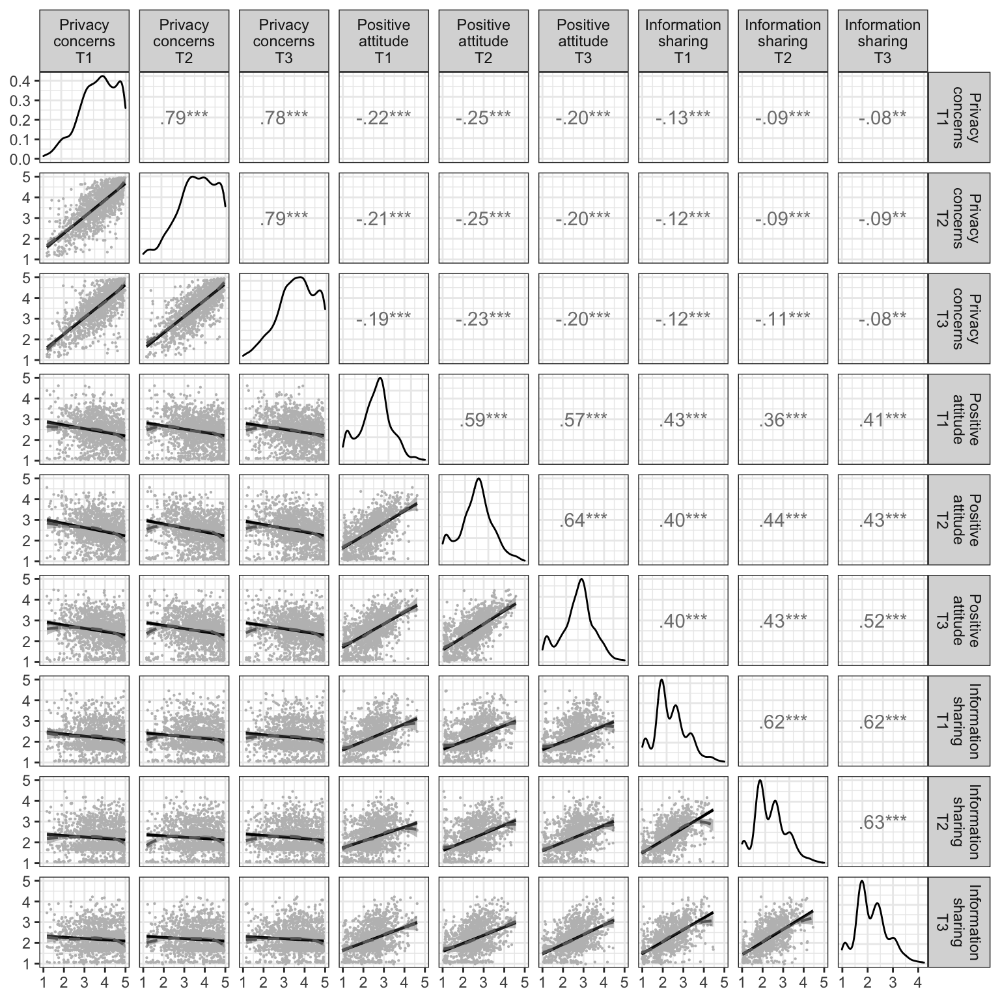

A Longitudinal Analysis of the Privacy Paradox
Tobias Dienlin, Philipp K. Masur, Sabine Trepte
# relevant packages
devtools::install_github("tdienlin/td@v.0.0.2.5")
required <- c("GGally", "ggplot2", "kableExtra", "knitr", "lavaan", "lme4", "magrittr", "MissMech", "papaja", "psych", "pwr",
"MVN", "semTools", "sjstats", "tidyverse", "td")
# load required libraries
lapply(required, function(x) library(x, character.only = T))
# export bib library
r_refs("bibliography/r-references.bib")
# first run 'data_wranling.R', in order to create these objects
d_wide <- read_csv("data/data_wide.csv")
d_wide_all <- read_csv("data/data_wide_all.csv")
d_long <- read_csv("data/data_long.csv")
# Extract descriptives to report in paper
desc <- d_wide %>% summarize_at(vars(ends_with("_m")), funs(mean(., na.rm = TRUE), sd(., na.rm = TRUE)))In what follows, we report the models that were run to obtain the results reported in the manuscript. To see the underlying code, click on the button code.
Sociodemographics
n_complete <- nrow(d_wide)
age_m <- mean(d_wide$age)
age_sd <- sd(d_wide$age)
male_per <- mean(d_wide$male) - 1
edu_col_per <- nrow(d_wide[d_wide$edu_num > 5, ])/n_complete * 100
tibble(N = n_complete, Age = age_m, `Age SD` = age_sd, `Male perc.` = male_per, `College perc.` = edu_col_per) %>% kable() %>%
kable_styling("striped")| N | Age | Age SD | Male perc. | College perc. |
|---|---|---|---|---|
| 1403 | 54.5 | 15.4 | 0.486 | 39.3 |
Analysis of Missing Values
d_tmp <- select(d_wide, -contains("_m"), -contains("tim"), -contains("T4"), -contains("T5"), -contains("per"), -contains("use"),
-c(id, age, edu, edu_num, male))
test_mar <- TestMCARNormality(d_tmp)
# print patterns
as.data.frame(test_mar$patused)# non-parametric test
(test_mar_p <- test_mar$pnormality)## [1] 0.514# calculate percentage of missing data
na_per <- mean(c(d_wide$t1_na_per, d_wide$t2_na_per, d_wide$t3_na_per)) * 100Visual inspection of the missing value patterns as well as the non-parametric test suggested that all missing values could be considered to be missing at random (p = .514).
Measures
In what follows, we report the measures we collected, including their items, factorial validity, reliability, and ICC. For the measures’ longitudinal invariance, see additional analyses.
Concerns about online privacy
Items
The following deals with things that can happen on the Internet.
- In general, how concerned are you about your privacy while using the Internet?
- Are you concerned about online organizations not being who they claim they are?
- Are you concerned about online identity theft?
- Are you concerned about people you do not know obtaining personal information about you from your online activities?
- Are you concerned that if you use your credit card to buy something on the Internet your credit card number will be obtained/intercepted by someone else?
- Are you concerned that an email you sent may be read by someone else besides the person you sent it to?
- Are you concerned that institutions or secret services could collect and analyze the data that you are disclosing on the Internet?
- Are you concerned that website providers are tracking your online activities?
- Are you concerned that you don’t know what other organizations or website providers are doing with you data?
(NA = “no Internet user / no reply”, 1 = “Not concerned at all” : 5 = “very concerned”)
CFA
# set-up
name <- "pri_con"
d_tmp <- select(d_wide, contains(paste0("t1_", name)), -contains("_m"))
model <- '
# create factors
t1_pri_con_f =~ 1*t1_pri_con_f1 + a2*t1_pri_con_f2
t2_pri_con_f =~ 1*t2_pri_con_f1 + a2*t2_pri_con_f2
t3_pri_con_f =~ 1*t3_pri_con_f1 + a2*t3_pri_con_f2
t1_pri_con_f1 =~ 1*t1_pri_con_04 + b2*t1_pri_con_05 + b3*t1_pri_con_06
t1_pri_con_f2 =~ 1*t1_pri_con_07 + c2*t1_pri_con_08 + c3*t1_pri_con_09
t2_pri_con_f1 =~ 1*t2_pri_con_04 + b2*t2_pri_con_05 + b3*t2_pri_con_06
t2_pri_con_f2 =~ 1*t2_pri_con_07 + c2*t2_pri_con_08 + c3*t2_pri_con_09
t3_pri_con_f1 =~ 1*t3_pri_con_04 + b2*t3_pri_con_05 + b3*t3_pri_con_06
t3_pri_con_f2 =~ 1*t3_pri_con_07 + c2*t3_pri_con_08 + c3*t3_pri_con_09
# error covariances
t3_pri_con_04 ~~ t2_pri_con_04 + t1_pri_con_04
t3_pri_con_05 ~~ t2_pri_con_05 + t1_pri_con_05
t3_pri_con_06 ~~ t2_pri_con_06 + t1_pri_con_06
t3_pri_con_07 ~~ t2_pri_con_07 + t1_pri_con_07
t3_pri_con_08 ~~ t2_pri_con_08 + t1_pri_con_08
t3_pri_con_09 ~~ t2_pri_con_09 + t1_pri_con_09
t2_pri_con_04 ~~ t1_pri_con_04
t2_pri_con_05 ~~ t1_pri_con_05
t2_pri_con_06 ~~ t1_pri_con_06
t2_pri_con_07 ~~ t1_pri_con_07
t2_pri_con_08 ~~ t1_pri_con_08
t2_pri_con_09 ~~ t1_pri_con_09
# factor covariances
t1_pri_con_f ~~ t2_pri_con_f + t3_pri_con_f
t2_pri_con_f ~~ t3_pri_con_f
'
assign(paste("fit", name, sep = "_"), cfa(model, d_wide, missing = "ML"))
summary(get(paste("fit", name, sep = "_")), standardized = TRUE, fit.measures = TRUE)## lavaan 0.6-5 ended normally after 86 iterations
##
## Estimator ML
## Optimization method NLMINB
## Number of free parameters 81
## Number of equality constraints 10
## Row rank of the constraints matrix 10
##
## Number of observations 1403
## Number of missing patterns 26
##
## Model Test User Model:
##
## Test statistic 661.175
## Degrees of freedom 118
## P-value (Chi-square) 0.000
##
## Model Test Baseline Model:
##
## Test statistic 18770.022
## Degrees of freedom 153
## P-value 0.000
##
## User Model versus Baseline Model:
##
## Comparative Fit Index (CFI) 0.971
## Tucker-Lewis Index (TLI) 0.962
##
## Loglikelihood and Information Criteria:
##
## Loglikelihood user model (H0) -30263.337
## Loglikelihood unrestricted model (H1) -29932.750
##
## Akaike (AIC) 60668.675
## Bayesian (BIC) 61041.167
## Sample-size adjusted Bayesian (BIC) 60815.626
##
## Root Mean Square Error of Approximation:
##
## RMSEA 0.057
## 90 Percent confidence interval - lower 0.053
## 90 Percent confidence interval - upper 0.062
## P-value RMSEA <= 0.05 0.002
##
## Standardized Root Mean Square Residual:
##
## SRMR 0.036
##
## Parameter Estimates:
##
## Information Observed
## Observed information based on Hessian
## Standard errors Standard
##
## Latent Variables:
## Estimate Std.Err z-value P(>|z|) Std.lv Std.all
## t1_pri_con_f =~
## t1_pr_c_1 1.000 0.942 0.942
## t1_pr_c_2 (a2) 1.212 0.031 38.916 0.000 0.952 0.952
## t2_pri_con_f =~
## t2_pr_c_1 1.000 0.966 0.966
## t2_pr_c_2 (a2) 1.212 0.031 38.916 0.000 0.952 0.952
## t3_pri_con_f =~
## t3_pr_c_1 1.000 0.986 0.986
## t3_pr_c_2 (a2) 1.212 0.031 38.916 0.000 0.955 0.955
## t1_pri_con_f1 =~
## t1_pr__04 1.000 0.845 0.789
## t1_pr__05 (b2) 1.026 0.028 36.986 0.000 0.867 0.675
## t1_pr__06 (b3) 1.088 0.024 44.494 0.000 0.919 0.779
## t1_pri_con_f2 =~
## t1_pr__07 1.000 1.013 0.817
## t1_pr__08 (c2) 0.971 0.018 55.102 0.000 0.984 0.841
## t1_pr__09 (c3) 0.859 0.016 52.558 0.000 0.871 0.828
## t2_pri_con_f1 =~
## t2_pr__04 1.000 0.846 0.796
## t2_pr__05 (b2) 1.026 0.028 36.986 0.000 0.868 0.672
## t2_pr__06 (b3) 1.088 0.024 44.494 0.000 0.920 0.791
## t2_pri_con_f2 =~
## t2_pr__07 1.000 1.039 0.839
## t2_pr__08 (c2) 0.971 0.018 55.102 0.000 1.009 0.855
## t2_pr__09 (c3) 0.859 0.016 52.558 0.000 0.893 0.834
## t3_pri_con_f1 =~
## t3_pr__04 1.000 0.833 0.790
## t3_pr__05 (b2) 1.026 0.028 36.986 0.000 0.855 0.658
## t3_pr__06 (b3) 1.088 0.024 44.494 0.000 0.906 0.791
## t3_pri_con_f2 =~
## t3_pr__07 1.000 1.043 0.843
## t3_pr__08 (c2) 0.971 0.018 55.102 0.000 1.013 0.869
## t3_pr__09 (c3) 0.859 0.016 52.558 0.000 0.896 0.832
##
## Covariances:
## Estimate Std.Err z-value P(>|z|) Std.lv Std.all
## .t2_pri_con_04 ~~
## .t3_pri_con_04 0.073 0.014 5.085 0.000 0.073 0.176
## .t1_pri_con_04 ~~
## .t3_pri_con_04 0.095 0.015 6.341 0.000 0.095 0.224
## .t2_pri_con_05 ~~
## .t3_pri_con_05 0.433 0.031 14.129 0.000 0.433 0.464
## .t1_pri_con_05 ~~
## .t3_pri_con_05 0.454 0.031 14.640 0.000 0.454 0.490
## .t2_pri_con_06 ~~
## .t3_pri_con_06 0.166 0.018 9.428 0.000 0.166 0.332
## .t1_pri_con_06 ~~
## .t3_pri_con_06 0.160 0.018 8.830 0.000 0.160 0.309
## .t2_pri_con_07 ~~
## .t3_pri_con_07 0.156 0.017 9.428 0.000 0.156 0.348
## .t1_pri_con_07 ~~
## .t3_pri_con_07 0.171 0.018 9.728 0.000 0.171 0.358
## .t2_pri_con_08 ~~
## .t3_pri_con_08 0.109 0.014 8.043 0.000 0.109 0.310
## .t1_pri_con_08 ~~
## .t3_pri_con_08 0.099 0.014 7.180 0.000 0.099 0.272
## .t2_pri_con_09 ~~
## .t3_pri_con_09 0.108 0.013 8.511 0.000 0.108 0.306
## .t1_pri_con_09 ~~
## .t3_pri_con_09 0.069 0.012 5.512 0.000 0.069 0.195
## .t1_pri_con_04 ~~
## .t2_pri_con_04 0.090 0.015 5.985 0.000 0.090 0.212
## .t1_pri_con_05 ~~
## .t2_pri_con_05 0.401 0.030 13.348 0.000 0.401 0.442
## .t1_pri_con_06 ~~
## .t2_pri_con_06 0.157 0.019 8.461 0.000 0.157 0.298
## .t1_pri_con_07 ~~
## .t2_pri_con_07 0.157 0.018 8.955 0.000 0.157 0.325
## .t1_pri_con_08 ~~
## .t2_pri_con_08 0.092 0.014 6.430 0.000 0.092 0.239
## .t1_pri_con_09 ~~
## .t2_pri_con_09 0.074 0.012 5.999 0.000 0.074 0.214
## t1_pri_con_f ~~
## t2_pri_con_f 0.511 0.030 17.157 0.000 0.786 0.786
## t3_pri_con_f 0.505 0.029 17.166 0.000 0.772 0.772
## t2_pri_con_f ~~
## t3_pri_con_f 0.528 0.030 17.351 0.000 0.786 0.786
##
## Intercepts:
## Estimate Std.Err z-value P(>|z|) Std.lv Std.all
## .t1_pri_con_04 3.745 0.029 130.814 0.000 3.745 3.498
## .t1_pri_con_05 3.842 0.034 111.479 0.000 3.842 2.990
## .t1_pri_con_06 3.314 0.032 105.073 0.000 3.314 2.809
## .t1_pri_con_07 3.623 0.033 109.216 0.000 3.623 2.920
## .t1_pri_con_08 3.624 0.031 115.845 0.000 3.624 3.097
## .t1_pri_con_09 4.095 0.028 145.606 0.000 4.095 3.893
## .t2_pri_con_04 3.675 0.028 129.357 0.000 3.675 3.459
## .t2_pri_con_05 3.784 0.035 109.375 0.000 3.784 2.932
## .t2_pri_con_06 3.258 0.031 104.716 0.000 3.258 2.801
## .t2_pri_con_07 3.556 0.033 107.425 0.000 3.556 2.872
## .t2_pri_con_08 3.551 0.032 112.593 0.000 3.551 3.010
## .t2_pri_con_09 3.994 0.029 139.662 0.000 3.994 3.732
## .t3_pri_con_04 3.664 0.028 129.881 0.000 3.664 3.473
## .t3_pri_con_05 3.709 0.035 106.555 0.000 3.709 2.857
## .t3_pri_con_06 3.256 0.031 106.189 0.000 3.256 2.839
## .t3_pri_con_07 3.492 0.033 105.575 0.000 3.492 2.823
## .t3_pri_con_08 3.560 0.031 114.210 0.000 3.560 3.055
## .t3_pri_con_09 3.959 0.029 137.398 0.000 3.959 3.675
## t1_pri_con_f 0.000 0.000 0.000
## t2_pri_con_f 0.000 0.000 0.000
## t3_pri_con_f 0.000 0.000 0.000
## .t1_pri_con_f1 0.000 0.000 0.000
## .t1_pri_con_f2 0.000 0.000 0.000
## .t2_pri_con_f1 0.000 0.000 0.000
## .t2_pri_con_f2 0.000 0.000 0.000
## .t3_pri_con_f1 0.000 0.000 0.000
## .t3_pri_con_f2 0.000 0.000 0.000
##
## Variances:
## Estimate Std.Err z-value P(>|z|) Std.lv Std.all
## .t1_pri_con_04 0.433 0.022 19.819 0.000 0.433 0.377
## .t1_pri_con_05 0.900 0.040 22.779 0.000 0.900 0.545
## .t1_pri_con_06 0.546 0.027 20.364 0.000 0.546 0.392
## .t1_pri_con_07 0.513 0.025 20.282 0.000 0.513 0.333
## .t1_pri_con_08 0.401 0.021 19.096 0.000 0.401 0.293
## .t1_pri_con_09 0.349 0.017 19.948 0.000 0.349 0.315
## .t2_pri_con_04 0.413 0.020 20.196 0.000 0.413 0.366
## .t2_pri_con_05 0.913 0.039 23.235 0.000 0.913 0.548
## .t2_pri_con_06 0.506 0.025 20.513 0.000 0.506 0.374
## .t2_pri_con_07 0.453 0.023 19.877 0.000 0.453 0.296
## .t2_pri_con_08 0.373 0.020 18.959 0.000 0.373 0.268
## .t2_pri_con_09 0.348 0.017 19.944 0.000 0.348 0.304
## .t3_pri_con_04 0.419 0.020 20.670 0.000 0.419 0.376
## .t3_pri_con_05 0.955 0.040 23.579 0.000 0.955 0.567
## .t3_pri_con_06 0.493 0.024 20.717 0.000 0.493 0.375
## .t3_pri_con_07 0.443 0.022 20.042 0.000 0.443 0.289
## .t3_pri_con_08 0.333 0.018 18.506 0.000 0.333 0.245
## .t3_pri_con_09 0.358 0.017 20.632 0.000 0.358 0.308
## t1_pri_con_f 0.633 0.035 18.237 0.000 1.000 1.000
## t2_pri_con_f 0.667 0.036 18.585 0.000 1.000 1.000
## t3_pri_con_f 0.675 0.036 18.769 0.000 1.000 1.000
## .t1_pri_con_f1 0.081 0.014 5.626 0.000 0.113 0.113
## .t1_pri_con_f2 0.097 0.019 5.195 0.000 0.094 0.094
## .t2_pri_con_f1 0.048 0.013 3.735 0.000 0.067 0.067
## .t2_pri_con_f2 0.100 0.018 5.713 0.000 0.093 0.093
## .t3_pri_con_f1 0.019 0.012 1.569 0.117 0.027 0.027
## .t3_pri_con_f2 0.097 0.017 5.669 0.000 0.089 0.089Reliability
reliabilityL2(get(paste("fit", name, sep = "_")), paste("t1", name, "f", sep = "_"))## omegaL1 omegaL2 partialOmegaL1
## 0.852 0.946 0.896reliabilityL2(get(paste("fit", name, sep = "_")), paste("t2", name, "f", sep = "_"))## omegaL1 omegaL2 partialOmegaL1
## 0.870 0.956 0.905reliabilityL2(get(paste("fit", name, sep = "_")), paste("t3", name, "f", sep = "_"))## omegaL1 omegaL2 partialOmegaL1
## 0.880 0.966 0.906ICC
fit <- lmer(pri_con_m ~ 1 + (1 | id), filter(d_long, wave < 4))
summary(fit)## Linear mixed model fit by REML ['lmerMod']
## Formula: pri_con_m ~ 1 + (1 | id)
## Data: filter(d_long, wave < 4)
##
## REML criterion at convergence: 13069
##
## Scaled residuals:
## Min 1Q Median 3Q Max
## -4.649 -0.448 0.058 0.468 4.840
##
## Random effects:
## Groups Name Variance Std.Dev.
## id (Intercept) 0.593 0.770
## Residual 0.210 0.458
## Number of obs: 6139, groups: id, 2705
##
## Fixed effects:
## Estimate Std. Error t value
## (Intercept) 3.6380 0.0161 226(icc_pri_con <- icc(fit))## # Intraclass Correlation Coefficient
##
## Adjusted ICC: 0.739
## Conditional ICC: 0.739Attitude Toward Online Sharing of Personal Information
Items
Now we will deal with information sharing on the Internet. Do you think that it is sensible to disclose the following pieces of information online, i.e., via the Internet?
- Financial information (bank data, account balances…)
- Medical information (health, medical records…)
- Second name
- First name
- Residence
- Street and house number
- Email address
- Phone number
- Photos (of you)
- Job (past and present)
- Education
(NA = “no Internet user / no reply”, 1 = “not sensible at all”, 2 = “somewhat not sensible”, 3 = “in part”, 4 = “somewhat sensible”, 5 = “very sensible”)
CFA
name <- "inf_sha_att"
d_tmp <- select(d_wide, contains(paste0("t1_", name)), -contains("_m"))
model <- '
# create factors
t1_inf_sha_att_f =~ 1*t1_inf_sha_att_f1 + o2*t1_inf_sha_att_f2 + o3*t1_inf_sha_att_f3 + o4*t1_inf_sha_att_f4 + o5*t1_inf_sha_att_f5
t2_inf_sha_att_f =~ 1*t2_inf_sha_att_f1 + o2*t2_inf_sha_att_f2 + o3*t2_inf_sha_att_f3 + o4*t2_inf_sha_att_f4 + o5*t2_inf_sha_att_f5
t3_inf_sha_att_f =~ 1*t3_inf_sha_att_f1 + o2*t3_inf_sha_att_f2 + o3*t3_inf_sha_att_f3 + o4*t3_inf_sha_att_f4 + o5*t3_inf_sha_att_f5
t1_inf_sha_att_f1 =~ 1*t1_inf_sha_att_01 + j2*t1_inf_sha_att_02
t1_inf_sha_att_f2 =~ 1*t1_inf_sha_att_03 + k2*t1_inf_sha_att_04
t1_inf_sha_att_f3 =~ 1*t1_inf_sha_att_05 + l2*t1_inf_sha_att_06
t1_inf_sha_att_f4 =~ 1*t1_inf_sha_att_07 + m2*t1_inf_sha_att_08
t1_inf_sha_att_f5 =~ 1*t1_inf_sha_att_10 + n2*t1_inf_sha_att_11
t2_inf_sha_att_f1 =~ 1*t2_inf_sha_att_01 + j2*t2_inf_sha_att_02
t2_inf_sha_att_f2 =~ 1*t2_inf_sha_att_03 + k2*t2_inf_sha_att_04
t2_inf_sha_att_f3 =~ 1*t2_inf_sha_att_05 + l2*t2_inf_sha_att_06
t2_inf_sha_att_f4 =~ 1*t2_inf_sha_att_07 + m2*t2_inf_sha_att_08
t2_inf_sha_att_f5 =~ 1*t2_inf_sha_att_10 + n2*t2_inf_sha_att_11
t3_inf_sha_att_f1 =~ 1*t3_inf_sha_att_01 + j2*t3_inf_sha_att_02
t3_inf_sha_att_f2 =~ 1*t3_inf_sha_att_03 + k2*t3_inf_sha_att_04
t3_inf_sha_att_f3 =~ 1*t3_inf_sha_att_05 + l2*t3_inf_sha_att_06
t3_inf_sha_att_f4 =~ 1*t3_inf_sha_att_07 + m2*t3_inf_sha_att_08
t3_inf_sha_att_f5 =~ 1*t3_inf_sha_att_10 + n2*t3_inf_sha_att_11
# factor covariance
t1_inf_sha_att_f ~~ t2_inf_sha_att_f + t3_inf_sha_att_f
t2_inf_sha_att_f ~~ t3_inf_sha_att_f
# item error covariance
t1_inf_sha_att_01 ~~ t2_inf_sha_att_01 + t3_inf_sha_att_01
t2_inf_sha_att_01 ~~ t3_inf_sha_att_01
t1_inf_sha_att_02 ~~ t2_inf_sha_att_02 + t3_inf_sha_att_02
t2_inf_sha_att_02 ~~ t3_inf_sha_att_02
t1_inf_sha_att_03 ~~ t2_inf_sha_att_03 + t3_inf_sha_att_03
t2_inf_sha_att_03 ~~ t3_inf_sha_att_03
t1_inf_sha_att_04 ~~ t2_inf_sha_att_04 + t3_inf_sha_att_04
t2_inf_sha_att_04 ~~ t3_inf_sha_att_04
t1_inf_sha_att_05 ~~ t2_inf_sha_att_05 + t3_inf_sha_att_05
t2_inf_sha_att_05 ~~ t3_inf_sha_att_05
t1_inf_sha_att_06 ~~ t2_inf_sha_att_06 + t3_inf_sha_att_06
t2_inf_sha_att_06 ~~ t3_inf_sha_att_06
t1_inf_sha_att_07 ~~ t2_inf_sha_att_07 + t3_inf_sha_att_07
t2_inf_sha_att_07 ~~ t3_inf_sha_att_07
t1_inf_sha_att_08 ~~ t2_inf_sha_att_08 + t3_inf_sha_att_08
t2_inf_sha_att_08 ~~ t3_inf_sha_att_08
t1_inf_sha_att_10 ~~ t2_inf_sha_att_10 + t3_inf_sha_att_10
t2_inf_sha_att_10 ~~ t3_inf_sha_att_10
t1_inf_sha_att_11 ~~ t2_inf_sha_att_11 + t3_inf_sha_att_11
t2_inf_sha_att_11 ~~ t3_inf_sha_att_11
'
assign(paste("fit", name, sep = "_"), cfa(model, d_wide, missing = "ML"))
summary(get(paste("fit", name, sep = "_")), standardized = TRUE, fit.measures = TRUE)## lavaan 0.6-5 ended normally after 146 iterations
##
## Estimator ML
## Optimization method NLMINB
## Number of free parameters 138
## Number of equality constraints 18
## Row rank of the constraints matrix 18
##
## Number of observations 1403
## Number of missing patterns 43
##
## Model Test User Model:
##
## Test statistic 2683.427
## Degrees of freedom 375
## P-value (Chi-square) 0.000
##
## Model Test Baseline Model:
##
## Test statistic 34051.217
## Degrees of freedom 435
## P-value 0.000
##
## User Model versus Baseline Model:
##
## Comparative Fit Index (CFI) 0.931
## Tucker-Lewis Index (TLI) 0.920
##
## Loglikelihood and Information Criteria:
##
## Loglikelihood user model (H0) -47032.859
## Loglikelihood unrestricted model (H1) -45691.145
##
## Akaike (AIC) 94305.718
## Bayesian (BIC) 94935.282
## Sample-size adjusted Bayesian (BIC) 94554.087
##
## Root Mean Square Error of Approximation:
##
## RMSEA 0.066
## 90 Percent confidence interval - lower 0.064
## 90 Percent confidence interval - upper 0.069
## P-value RMSEA <= 0.05 0.000
##
## Standardized Root Mean Square Residual:
##
## SRMR 0.080
##
## Parameter Estimates:
##
## Information Observed
## Observed information based on Hessian
## Standard errors Standard
##
## Latent Variables:
## Estimate Std.Err z-value P(>|z|) Std.lv Std.all
## t1_inf_sha_att_f =~
## t1_nf___1 1.000 0.417 0.417
## t1_nf___2 (o2) 2.954 0.179 16.541 0.000 0.950 0.950
## t1_nf___3 (o3) 2.902 0.175 16.543 0.000 0.934 0.934
## t1_nf___4 (o4) 2.201 0.138 15.934 0.000 0.875 0.875
## t1_nf___5 (o5) 1.483 0.101 14.750 0.000 0.484 0.484
## t2_inf_sha_att_f =~
## t2_nf___1 1.000 0.439 0.439
## t2_nf___2 (o2) 2.954 0.179 16.541 0.000 0.960 0.960
## t2_nf___3 (o3) 2.902 0.175 16.543 0.000 0.946 0.946
## t2_nf___4 (o4) 2.201 0.138 15.934 0.000 0.907 0.907
## t2_nf___5 (o5) 1.483 0.101 14.750 0.000 0.487 0.487
## t3_inf_sha_att_f =~
## t3_nf___1 1.000 0.425 0.425
## t3_nf___2 (o2) 2.954 0.179 16.541 0.000 0.931 0.931
## t3_nf___3 (o3) 2.902 0.175 16.543 0.000 0.924 0.924
## t3_nf___4 (o4) 2.201 0.138 15.934 0.000 0.891 0.891
## t3_nf___5 (o5) 1.483 0.101 14.750 0.000 0.481 0.481
## t1_inf_sha_att_f1 =~
## t1_n___01 1.000 0.780 0.698
## t1_n___02 (j2) 0.881 0.062 14.292 0.000 0.687 0.624
## t1_inf_sha_att_f2 =~
## t1_n___03 1.000 1.012 0.921
## t1_n___04 (k2) 0.941 0.012 77.226 0.000 0.952 0.896
## t1_inf_sha_att_f3 =~
## t1_n___05 1.000 1.011 0.944
## t1_n___06 (l2) 0.945 0.012 75.718 0.000 0.955 0.879
## t1_inf_sha_att_f4 =~
## t1_n___07 1.000 0.819 0.747
## t1_n___08 (m2) 0.901 0.026 35.176 0.000 0.737 0.692
## t1_inf_sha_att_f5 =~
## t1_n___10 1.000 0.997 0.934
## t1_n___11 (n2) 0.976 0.020 49.065 0.000 0.973 0.918
## t2_inf_sha_att_f1 =~
## t2_n___01 1.000 0.743 0.653
## t2_n___02 (j2) 0.881 0.062 14.292 0.000 0.654 0.602
## t2_inf_sha_att_f2 =~
## t2_n___03 1.000 1.004 0.919
## t2_n___04 (k2) 0.941 0.012 77.226 0.000 0.945 0.886
## t2_inf_sha_att_f3 =~
## t2_n___05 1.000 1.001 0.944
## t2_n___06 (l2) 0.945 0.012 75.718 0.000 0.946 0.866
## t2_inf_sha_att_f4 =~
## t2_n___07 1.000 0.792 0.726
## t2_n___08 (m2) 0.901 0.026 35.176 0.000 0.713 0.668
## t2_inf_sha_att_f5 =~
## t2_n___10 1.000 0.994 0.949
## t2_n___11 (n2) 0.976 0.020 49.065 0.000 0.969 0.921
## t3_inf_sha_att_f1 =~
## t3_n___01 1.000 0.739 0.655
## t3_n___02 (j2) 0.881 0.062 14.292 0.000 0.651 0.613
## t3_inf_sha_att_f2 =~
## t3_n___03 1.000 0.997 0.933
## t3_n___04 (k2) 0.941 0.012 77.226 0.000 0.939 0.887
## t3_inf_sha_att_f3 =~
## t3_n___05 1.000 0.987 0.936
## t3_n___06 (l2) 0.945 0.012 75.718 0.000 0.933 0.872
## t3_inf_sha_att_f4 =~
## t3_n___07 1.000 0.776 0.746
## t3_n___08 (m2) 0.901 0.026 35.176 0.000 0.699 0.677
## t3_inf_sha_att_f5 =~
## t3_n___10 1.000 0.968 0.942
## t3_n___11 (n2) 0.976 0.020 49.065 0.000 0.944 0.919
##
## Covariances:
## Estimate Std.Err z-value P(>|z|) Std.lv Std.all
## t1_inf_sha_att_f ~~
## t2_inf_sh_tt_f 0.061 0.008 7.555 0.000 0.574 0.574
## t3_inf_sh_tt_f 0.057 0.008 7.535 0.000 0.561 0.561
## t2_inf_sha_att_f ~~
## t3_inf_sh_tt_f 0.065 0.008 7.664 0.000 0.634 0.634
## .t1_inf_sha_att_01 ~~
## .t2_nf_sh_tt_01 0.292 0.029 9.940 0.000 0.292 0.423
## .t3_nf_sh_tt_01 0.306 0.029 10.517 0.000 0.306 0.449
## .t2_inf_sha_att_01 ~~
## .t3_nf_sh_tt_01 0.339 0.031 11.038 0.000 0.339 0.462
## .t1_inf_sha_att_02 ~~
## .t2_nf_sh_tt_02 0.345 0.029 12.034 0.000 0.345 0.462
## .t3_nf_sh_tt_02 0.326 0.028 11.683 0.000 0.326 0.451
## .t2_inf_sha_att_02 ~~
## .t3_nf_sh_tt_02 0.393 0.029 13.745 0.000 0.393 0.540
## .t1_inf_sha_att_03 ~~
## .t2_nf_sh_tt_03 0.071 0.009 7.984 0.000 0.071 0.384
## .t3_nf_sh_tt_03 0.065 0.009 7.654 0.000 0.065 0.395
## .t2_inf_sha_att_03 ~~
## .t3_nf_sh_tt_03 0.067 0.009 7.854 0.000 0.067 0.404
## .t1_inf_sha_att_04 ~~
## .t2_nf_sh_tt_04 0.088 0.009 9.414 0.000 0.088 0.377
## .t3_nf_sh_tt_04 0.074 0.009 8.046 0.000 0.074 0.321
## .t2_inf_sha_att_04 ~~
## .t3_nf_sh_tt_04 0.098 0.010 10.200 0.000 0.098 0.407
## .t1_inf_sha_att_05 ~~
## .t2_nf_sh_tt_05 0.033 0.008 4.332 0.000 0.033 0.264
## .t3_nf_sh_tt_05 0.037 0.008 4.697 0.000 0.037 0.278
## .t2_inf_sha_att_05 ~~
## .t3_nf_sh_tt_05 0.027 0.008 3.518 0.000 0.027 0.207
## .t1_inf_sha_att_06 ~~
## .t2_nf_sh_tt_06 0.152 0.011 13.980 0.000 0.152 0.537
## .t3_nf_sh_tt_06 0.129 0.010 12.344 0.000 0.129 0.476
## .t2_inf_sha_att_06 ~~
## .t3_nf_sh_tt_06 0.137 0.011 12.677 0.000 0.137 0.478
## .t1_inf_sha_att_07 ~~
## .t2_nf_sh_tt_07 0.268 0.020 13.318 0.000 0.268 0.491
## .t3_nf_sh_tt_07 0.241 0.019 12.677 0.000 0.241 0.475
## .t2_inf_sha_att_07 ~~
## .t3_nf_sh_tt_07 0.279 0.019 14.313 0.000 0.279 0.536
## .t1_inf_sha_att_08 ~~
## .t2_nf_sh_tt_08 0.260 0.021 12.518 0.000 0.260 0.426
## .t3_nf_sh_tt_08 0.275 0.020 13.608 0.000 0.275 0.470
## .t2_inf_sha_att_08 ~~
## .t3_nf_sh_tt_08 0.267 0.020 13.034 0.000 0.267 0.442
## .t1_inf_sha_att_10 ~~
## .t2_nf_sh_tt_10 0.031 0.011 2.932 0.003 0.031 0.250
## .t3_nf_sh_tt_10 0.009 0.011 0.833 0.405 0.009 0.069
## .t2_inf_sha_att_10 ~~
## .t3_nf_sh_tt_10 0.006 0.010 0.554 0.579 0.006 0.051
## .t1_inf_sha_att_11 ~~
## .t2_nf_sh_tt_11 0.038 0.011 3.499 0.000 0.038 0.218
## .t3_nf_sh_tt_11 0.051 0.011 4.737 0.000 0.051 0.297
## .t2_inf_sha_att_11 ~~
## .t3_nf_sh_tt_11 0.046 0.010 4.387 0.000 0.046 0.275
##
## Intercepts:
## Estimate Std.Err z-value P(>|z|) Std.lv Std.all
## .t1_nf_sh_tt_01 1.704 0.030 57.045 0.000 1.704 1.524
## .t1_nf_sh_tt_02 1.900 0.029 64.555 0.000 1.900 1.726
## .t1_nf_sh_tt_03 2.788 0.029 95.014 0.000 2.788 2.538
## .t1_nf_sh_tt_04 2.940 0.028 103.517 0.000 2.940 2.765
## .t1_nf_sh_tt_05 2.626 0.029 91.815 0.000 2.626 2.453
## .t1_nf_sh_tt_06 2.373 0.029 81.724 0.000 2.373 2.184
## .t1_nf_sh_tt_07 3.010 0.029 102.744 0.000 3.010 2.745
## .t1_nf_sh_tt_08 2.294 0.028 80.559 0.000 2.294 2.153
## .t1_nf_sh_tt_10 2.249 0.029 78.816 0.000 2.249 2.107
## .t1_nf_sh_tt_11 2.295 0.028 81.021 0.000 2.295 2.166
## .t2_nf_sh_tt_01 1.763 0.030 57.906 0.000 1.763 1.551
## .t2_nf_sh_tt_02 1.931 0.029 66.338 0.000 1.931 1.777
## .t2_nf_sh_tt_03 2.904 0.029 99.355 0.000 2.904 2.659
## .t2_nf_sh_tt_04 2.999 0.029 105.004 0.000 2.999 2.811
## .t2_nf_sh_tt_05 2.711 0.028 95.577 0.000 2.711 2.558
## .t2_nf_sh_tt_06 2.428 0.029 83.016 0.000 2.428 2.222
## .t2_nf_sh_tt_07 3.119 0.029 106.837 0.000 3.119 2.861
## .t2_nf_sh_tt_08 2.332 0.029 81.536 0.000 2.332 2.183
## .t2_nf_sh_tt_10 2.271 0.028 80.899 0.000 2.271 2.169
## .t2_nf_sh_tt_11 2.363 0.028 83.753 0.000 2.363 2.245
## .t3_nf_sh_tt_01 1.777 0.030 58.962 0.000 1.777 1.575
## .t3_nf_sh_tt_02 1.887 0.028 66.581 0.000 1.887 1.778
## .t3_nf_sh_tt_03 2.951 0.029 103.374 0.000 2.951 2.760
## .t3_nf_sh_tt_04 3.057 0.028 108.245 0.000 3.057 2.890
## .t3_nf_sh_tt_05 2.737 0.028 97.145 0.000 2.737 2.594
## .t3_nf_sh_tt_06 2.473 0.029 86.630 0.000 2.473 2.313
## .t3_nf_sh_tt_07 3.103 0.028 111.586 0.000 3.103 2.981
## .t3_nf_sh_tt_08 2.367 0.028 85.840 0.000 2.367 2.293
## .t3_nf_sh_tt_10 2.297 0.027 83.630 0.000 2.297 2.234
## .t3_nf_sh_tt_11 2.366 0.027 86.179 0.000 2.366 2.301
## t1_inf_sh_tt_f 0.000 0.000 0.000
## t2_inf_sh_tt_f 0.000 0.000 0.000
## t3_inf_sh_tt_f 0.000 0.000 0.000
## .t1_nf_sh_tt_f1 0.000 0.000 0.000
## .t1_nf_sh_tt_f2 0.000 0.000 0.000
## .t1_nf_sh_tt_f3 0.000 0.000 0.000
## .t1_nf_sh_tt_f4 0.000 0.000 0.000
## .t1_nf_sh_tt_f5 0.000 0.000 0.000
## .t2_nf_sh_tt_f1 0.000 0.000 0.000
## .t2_nf_sh_tt_f2 0.000 0.000 0.000
## .t2_nf_sh_tt_f3 0.000 0.000 0.000
## .t2_nf_sh_tt_f4 0.000 0.000 0.000
## .t2_nf_sh_tt_f5 0.000 0.000 0.000
## .t3_nf_sh_tt_f1 0.000 0.000 0.000
## .t3_nf_sh_tt_f2 0.000 0.000 0.000
## .t3_nf_sh_tt_f3 0.000 0.000 0.000
## .t3_nf_sh_tt_f4 0.000 0.000 0.000
## .t3_nf_sh_tt_f5 0.000 0.000 0.000
##
## Variances:
## Estimate Std.Err z-value P(>|z|) Std.lv Std.all
## .t1_nf_sh_tt_01 0.641 0.053 11.993 0.000 0.641 0.513
## .t1_nf_sh_tt_02 0.740 0.047 15.886 0.000 0.740 0.611
## .t1_nf_sh_tt_03 0.183 0.013 14.444 0.000 0.183 0.151
## .t1_nf_sh_tt_04 0.223 0.013 17.744 0.000 0.223 0.198
## .t1_nf_sh_tt_05 0.125 0.011 11.154 0.000 0.125 0.109
## .t1_nf_sh_tt_06 0.269 0.014 19.433 0.000 0.269 0.228
## .t1_nf_sh_tt_07 0.532 0.029 18.583 0.000 0.532 0.443
## .t1_nf_sh_tt_08 0.591 0.028 21.016 0.000 0.591 0.521
## .t1_nf_sh_tt_10 0.145 0.022 6.677 0.000 0.145 0.127
## .t1_nf_sh_tt_11 0.176 0.021 8.457 0.000 0.176 0.157
## .t2_nf_sh_tt_01 0.742 0.053 14.027 0.000 0.742 0.574
## .t2_nf_sh_tt_02 0.753 0.045 16.555 0.000 0.753 0.638
## .t2_nf_sh_tt_03 0.185 0.012 14.846 0.000 0.185 0.155
## .t2_nf_sh_tt_04 0.245 0.013 18.747 0.000 0.245 0.216
## .t2_nf_sh_tt_05 0.121 0.011 11.119 0.000 0.121 0.108
## .t2_nf_sh_tt_06 0.299 0.015 20.526 0.000 0.299 0.251
## .t2_nf_sh_tt_07 0.562 0.029 19.212 0.000 0.562 0.473
## .t2_nf_sh_tt_08 0.632 0.029 21.753 0.000 0.632 0.554
## .t2_nf_sh_tt_10 0.109 0.021 5.281 0.000 0.109 0.099
## .t2_nf_sh_tt_11 0.168 0.020 8.300 0.000 0.168 0.152
## .t3_nf_sh_tt_01 0.728 0.052 13.883 0.000 0.728 0.571
## .t3_nf_sh_tt_02 0.703 0.044 15.940 0.000 0.703 0.624
## .t3_nf_sh_tt_03 0.149 0.012 12.426 0.000 0.149 0.130
## .t3_nf_sh_tt_04 0.238 0.013 18.434 0.000 0.238 0.213
## .t3_nf_sh_tt_05 0.139 0.012 11.682 0.000 0.139 0.125
## .t3_nf_sh_tt_06 0.273 0.014 19.345 0.000 0.273 0.239
## .t3_nf_sh_tt_07 0.481 0.026 18.238 0.000 0.481 0.444
## .t3_nf_sh_tt_08 0.577 0.027 21.748 0.000 0.577 0.541
## .t3_nf_sh_tt_10 0.119 0.021 5.768 0.000 0.119 0.113
## .t3_nf_sh_tt_11 0.165 0.020 8.276 0.000 0.165 0.156
## t1_inf_sh_tt_f 0.106 0.013 7.965 0.000 1.000 1.000
## t2_inf_sh_tt_f 0.106 0.013 7.966 0.000 1.000 1.000
## t3_inf_sh_tt_f 0.099 0.012 7.950 0.000 1.000 1.000
## .t1_nf_sh_tt_f1 0.502 0.050 10.036 0.000 0.826 0.826
## .t1_nf_sh_tt_f2 0.100 0.014 7.293 0.000 0.098 0.098
## .t1_nf_sh_tt_f3 0.131 0.014 9.214 0.000 0.128 0.128
## .t1_nf_sh_tt_f4 0.158 0.020 7.918 0.000 0.235 0.235
## .t1_nf_sh_tt_f5 0.761 0.037 20.692 0.000 0.766 0.766
## .t2_nf_sh_tt_f1 0.445 0.046 9.577 0.000 0.807 0.807
## .t2_nf_sh_tt_f2 0.080 0.013 6.275 0.000 0.079 0.079
## .t2_nf_sh_tt_f3 0.106 0.013 8.100 0.000 0.106 0.106
## .t2_nf_sh_tt_f4 0.111 0.019 5.994 0.000 0.177 0.177
## .t2_nf_sh_tt_f5 0.753 0.036 20.917 0.000 0.763 0.763
## .t3_nf_sh_tt_f1 0.447 0.046 9.745 0.000 0.819 0.819
## .t3_nf_sh_tt_f2 0.133 0.014 9.181 0.000 0.134 0.134
## .t3_nf_sh_tt_f3 0.143 0.015 9.645 0.000 0.147 0.147
## .t3_nf_sh_tt_f4 0.124 0.018 6.981 0.000 0.206 0.206
## .t3_nf_sh_tt_f5 0.720 0.035 20.713 0.000 0.768 0.768Reliability
reliabilityL2(get(paste("fit", name, sep = "_")), paste("t1", name, "f", sep = "_"))## omegaL1 omegaL2 partialOmegaL1
## 0.817 0.877 0.924reliabilityL2(get(paste("fit", name, sep = "_")), paste("t2", name, "f", sep = "_"))## omegaL1 omegaL2 partialOmegaL1
## 0.824 0.888 0.920reliabilityL2(get(paste("fit", name, sep = "_")), paste("t3", name, "f", sep = "_"))## omegaL1 omegaL2 partialOmegaL1
## 0.812 0.875 0.920ICC
fit <- lmer(inf_sha_att_m ~ 1 + (1 | id), filter(d_long, wave < 4))
summary(fit)## Linear mixed model fit by REML ['lmerMod']
## Formula: inf_sha_att_m ~ 1 + (1 | id)
## Data: filter(d_long, wave < 4)
##
## REML criterion at convergence: 11502
##
## Scaled residuals:
## Min 1Q Median 3Q Max
## -3.213 -0.498 0.023 0.488 4.423
##
## Random effects:
## Groups Name Variance Std.Dev.
## id (Intercept) 0.295 0.543
## Residual 0.203 0.451
## Number of obs: 6168, groups: id, 2716
##
## Fixed effects:
## Estimate Std. Error t value
## (Intercept) 2.3815 0.0121 196(icc_inf_sha_att <- icc(fit))## # Intraclass Correlation Coefficient
##
## Adjusted ICC: 0.592
## Conditional ICC: 0.592Online Sharing of Personal Information
Items
In the following, please indicate how often you disclose the following information on the Internet. How often do you disclose the following pieces of information online, i.e., on the Internet?
- Financial information (bank data, account balances…)
- Medical information (health, medical records…)
- Second name
- First name
- Residence
- Street and house number
- Email address
- Phone number
- Photos (of you)
- Job (past and present)
- Education
(NA = “no Internet user / no reply”, 1 = “every day”, 2 = “weekly”, 3 = “monthly”, 4 = “less than that”, 5 = “never”)
CFA
name <- "inf_sha_beh"
d_tmp <- select(d_wide, contains(paste0("t1_", name)), -contains("_m"))
model <- '
# create factors
t1_inf_sha_beh_f =~ 1*t1_inf_sha_beh_f1 + o2*t1_inf_sha_beh_f2 + o3*t1_inf_sha_beh_f3 + o4*t1_inf_sha_beh_f4 + o5*t1_inf_sha_beh_f5
t2_inf_sha_beh_f =~ 1*t2_inf_sha_beh_f1 + o2*t2_inf_sha_beh_f2 + o3*t2_inf_sha_beh_f3 + o4*t2_inf_sha_beh_f4 + o5*t2_inf_sha_beh_f5
t3_inf_sha_beh_f =~ 1*t3_inf_sha_beh_f1 + o2*t3_inf_sha_beh_f2 + o3*t3_inf_sha_beh_f3 + o4*t3_inf_sha_beh_f4 + o5*t3_inf_sha_beh_f5
t1_inf_sha_beh_f1 =~ 1*t1_inf_sha_beh_01 + j2*t1_inf_sha_beh_02
t1_inf_sha_beh_f2 =~ 1*t1_inf_sha_beh_03 + k2*t1_inf_sha_beh_04
t1_inf_sha_beh_f3 =~ 1*t1_inf_sha_beh_05 + l2*t1_inf_sha_beh_06
t1_inf_sha_beh_f4 =~ 1*t1_inf_sha_beh_07 + m2*t1_inf_sha_beh_08
t1_inf_sha_beh_f5 =~ 1*t1_inf_sha_beh_10 + n2*t1_inf_sha_beh_11
t2_inf_sha_beh_f1 =~ 1*t2_inf_sha_beh_01 + j2*t2_inf_sha_beh_02
t2_inf_sha_beh_f2 =~ 1*t2_inf_sha_beh_03 + k2*t2_inf_sha_beh_04
t2_inf_sha_beh_f3 =~ 1*t2_inf_sha_beh_05 + l2*t2_inf_sha_beh_06
t2_inf_sha_beh_f4 =~ 1*t2_inf_sha_beh_07 + m2*t2_inf_sha_beh_08
t2_inf_sha_beh_f5 =~ 1*t2_inf_sha_beh_10 + n2*t2_inf_sha_beh_11
t3_inf_sha_beh_f1 =~ 1*t3_inf_sha_beh_01 + j2*t3_inf_sha_beh_02
t3_inf_sha_beh_f2 =~ 1*t3_inf_sha_beh_03 + k2*t3_inf_sha_beh_04
t3_inf_sha_beh_f3 =~ 1*t3_inf_sha_beh_05 + l2*t3_inf_sha_beh_06
t3_inf_sha_beh_f4 =~ 1*t3_inf_sha_beh_07 + m2*t3_inf_sha_beh_08
t3_inf_sha_beh_f5 =~ 1*t3_inf_sha_beh_10 + n2*t3_inf_sha_beh_11
# factor covariance
t1_inf_sha_beh_f ~~ t2_inf_sha_beh_f + t3_inf_sha_beh_f
t2_inf_sha_beh_f ~~ t3_inf_sha_beh_f
# item error covariance
t1_inf_sha_beh_01 ~~ t2_inf_sha_beh_01 + t3_inf_sha_beh_01
t2_inf_sha_beh_01 ~~ t3_inf_sha_beh_01
t1_inf_sha_beh_02 ~~ t2_inf_sha_beh_02 + t3_inf_sha_beh_02
t2_inf_sha_beh_02 ~~ t3_inf_sha_beh_02
t1_inf_sha_beh_03 ~~ t2_inf_sha_beh_03 + t3_inf_sha_beh_03
t2_inf_sha_beh_03 ~~ t3_inf_sha_beh_03
t1_inf_sha_beh_04 ~~ t2_inf_sha_beh_04 + t3_inf_sha_beh_04
t2_inf_sha_beh_04 ~~ t3_inf_sha_beh_04
t1_inf_sha_beh_05 ~~ t2_inf_sha_beh_05 + t3_inf_sha_beh_05
t2_inf_sha_beh_05 ~~ t3_inf_sha_beh_05
t1_inf_sha_beh_06 ~~ t2_inf_sha_beh_06 + t3_inf_sha_beh_06
t2_inf_sha_beh_06 ~~ t3_inf_sha_beh_06
t1_inf_sha_beh_07 ~~ t2_inf_sha_beh_07 + t3_inf_sha_beh_07
t2_inf_sha_beh_07 ~~ t3_inf_sha_beh_07
t1_inf_sha_beh_08 ~~ t2_inf_sha_beh_08 + t3_inf_sha_beh_08
t2_inf_sha_beh_08 ~~ t3_inf_sha_beh_08
t1_inf_sha_beh_10 ~~ t2_inf_sha_beh_10 + t3_inf_sha_beh_10
t2_inf_sha_beh_10 ~~ t3_inf_sha_beh_10
t1_inf_sha_beh_11 ~~ t2_inf_sha_beh_11 + t3_inf_sha_beh_11
t2_inf_sha_beh_11 ~~ t3_inf_sha_beh_11
'
assign(paste("fit", name, sep = "_"), cfa(model, d_wide, missing = "ML"))
summary(get(paste("fit", name, sep = "_")), standardized = TRUE, fit.measures = TRUE)## lavaan 0.6-5 ended normally after 182 iterations
##
## Estimator ML
## Optimization method NLMINB
## Number of free parameters 138
## Number of equality constraints 18
## Row rank of the constraints matrix 18
##
## Number of observations 1403
## Number of missing patterns 38
##
## Model Test User Model:
##
## Test statistic 2527.695
## Degrees of freedom 375
## P-value (Chi-square) 0.000
##
## Model Test Baseline Model:
##
## Test statistic 39663.809
## Degrees of freedom 435
## P-value 0.000
##
## User Model versus Baseline Model:
##
## Comparative Fit Index (CFI) 0.945
## Tucker-Lewis Index (TLI) 0.936
##
## Loglikelihood and Information Criteria:
##
## Loglikelihood user model (H0) -37165.009
## Loglikelihood unrestricted model (H1) -35901.162
##
## Akaike (AIC) 74570.018
## Bayesian (BIC) 75199.583
## Sample-size adjusted Bayesian (BIC) 74818.387
##
## Root Mean Square Error of Approximation:
##
## RMSEA 0.064
## 90 Percent confidence interval - lower 0.062
## 90 Percent confidence interval - upper 0.066
## P-value RMSEA <= 0.05 0.000
##
## Standardized Root Mean Square Residual:
##
## SRMR 0.063
##
## Parameter Estimates:
##
## Information Observed
## Observed information based on Hessian
## Standard errors Standard
##
## Latent Variables:
## Estimate Std.Err z-value P(>|z|) Std.lv Std.all
## t1_inf_sha_beh_f =~
## t1_nf___1 1.000 0.449 0.449
## t1_nf___2 (o2) 2.913 0.163 17.902 0.000 0.961 0.961
## t1_nf___3 (o3) 2.681 0.150 17.926 0.000 0.941 0.941
## t1_nf___4 (o4) 2.582 0.146 17.666 0.000 0.958 0.958
## t1_nf___5 (o5) 1.292 0.081 15.942 0.000 0.528 0.528
## t2_inf_sha_beh_f =~
## t2_nf___1 1.000 0.556 0.556
## t2_nf___2 (o2) 2.913 0.163 17.902 0.000 0.963 0.963
## t2_nf___3 (o3) 2.681 0.150 17.926 0.000 0.923 0.923
## t2_nf___4 (o4) 2.582 0.146 17.666 0.000 0.944 0.944
## t2_nf___5 (o5) 1.292 0.081 15.942 0.000 0.530 0.530
## t3_inf_sha_beh_f =~
## t3_nf___1 1.000 0.459 0.459
## t3_nf___2 (o2) 2.913 0.163 17.902 0.000 0.956 0.956
## t3_nf___3 (o3) 2.681 0.150 17.926 0.000 0.938 0.938
## t3_nf___4 (o4) 2.582 0.146 17.666 0.000 0.931 0.931
## t3_nf___5 (o5) 1.292 0.081 15.942 0.000 0.504 0.504
## t1_inf_sha_beh_f1 =~
## t1_n___01 1.000 0.750 0.693
## t1_n___02 (j2) 0.307 0.029 10.437 0.000 0.230 0.395
## t1_inf_sha_beh_f2 =~
## t1_n___03 1.000 1.021 0.964
## t1_n___04 (k2) 0.999 0.008 125.373 0.000 1.020 0.964
## t1_inf_sha_beh_f3 =~
## t1_n___05 1.000 0.960 0.974
## t1_n___06 (l2) 0.916 0.010 95.266 0.000 0.879 0.906
## t1_inf_sha_beh_f4 =~
## t1_n___07 1.000 0.908 0.859
## t1_n___08 (m2) 0.735 0.017 43.185 0.000 0.668 0.695
## t1_inf_sha_beh_f5 =~
## t1_n___10 1.000 0.825 0.931
## t1_n___11 (n2) 0.827 0.022 38.213 0.000 0.682 0.822
## t2_inf_sha_beh_f1 =~
## t2_n___01 1.000 0.587 0.553
## t2_n___02 (j2) 0.307 0.029 10.437 0.000 0.180 0.371
## t2_inf_sha_beh_f2 =~
## t2_n___03 1.000 0.987 0.959
## t2_n___04 (k2) 0.999 0.008 125.373 0.000 0.986 0.948
## t2_inf_sha_beh_f3 =~
## t2_n___05 1.000 0.948 0.967
## t2_n___06 (l2) 0.916 0.010 95.266 0.000 0.868 0.904
## t2_inf_sha_beh_f4 =~
## t2_n___07 1.000 0.892 0.856
## t2_n___08 (m2) 0.735 0.017 43.185 0.000 0.656 0.683
## t2_inf_sha_beh_f5 =~
## t2_n___10 1.000 0.796 0.937
## t2_n___11 (n2) 0.827 0.022 38.213 0.000 0.658 0.818
## t3_inf_sha_beh_f1 =~
## t3_n___01 1.000 0.684 0.648
## t3_n___02 (j2) 0.307 0.029 10.437 0.000 0.210 0.413
## t3_inf_sha_beh_f2 =~
## t3_n___03 1.000 0.956 0.967
## t3_n___04 (k2) 0.999 0.008 125.373 0.000 0.955 0.949
## t3_inf_sha_beh_f3 =~
## t3_n___05 1.000 0.897 0.970
## t3_n___06 (l2) 0.916 0.010 95.266 0.000 0.822 0.900
## t3_inf_sha_beh_f4 =~
## t3_n___07 1.000 0.870 0.841
## t3_n___08 (m2) 0.735 0.017 43.185 0.000 0.640 0.693
## t3_inf_sha_beh_f5 =~
## t3_n___10 1.000 0.806 0.943
## t3_n___11 (n2) 0.827 0.022 38.213 0.000 0.666 0.849
##
## Covariances:
## Estimate Std.Err z-value P(>|z|) Std.lv Std.all
## t1_inf_sha_beh_f ~~
## t2_inf_sh_bh_f 0.070 0.009 8.178 0.000 0.634 0.634
## t3_inf_sh_bh_f 0.066 0.008 8.160 0.000 0.624 0.624
## t2_inf_sha_beh_f ~~
## t3_inf_sh_bh_f 0.066 0.008 8.180 0.000 0.642 0.642
## .t1_inf_sha_beh_01 ~~
## .t2_nf_sh_bh_01 0.389 0.029 13.353 0.000 0.389 0.563
## .t3_nf_sh_bh_01 0.352 0.028 12.450 0.000 0.352 0.561
## .t2_inf_sha_beh_01 ~~
## .t3_nf_sh_bh_01 0.424 0.029 14.629 0.000 0.424 0.598
## .t1_inf_sha_beh_02 ~~
## .t2_nf_sh_bh_02 0.060 0.007 8.257 0.000 0.060 0.248
## .t3_nf_sh_bh_02 0.057 0.007 7.651 0.000 0.057 0.231
## .t2_inf_sha_beh_02 ~~
## .t3_nf_sh_bh_02 0.065 0.006 10.141 0.000 0.065 0.311
## .t1_inf_sha_beh_03 ~~
## .t2_nf_sh_bh_03 0.028 0.004 6.384 0.000 0.028 0.338
## .t3_nf_sh_bh_03 0.032 0.004 8.013 0.000 0.032 0.456
## .t2_inf_sha_beh_03 ~~
## .t3_nf_sh_bh_03 0.041 0.004 9.275 0.000 0.041 0.563
## .t1_inf_sha_beh_04 ~~
## .t2_nf_sh_bh_04 0.042 0.005 9.055 0.000 0.042 0.448
## .t3_nf_sh_bh_04 0.031 0.004 7.313 0.000 0.031 0.353
## .t2_inf_sha_beh_04 ~~
## .t3_nf_sh_bh_04 0.055 0.005 10.882 0.000 0.055 0.519
## .t1_inf_sha_beh_05 ~~
## .t2_nf_sh_bh_05 0.016 0.004 3.615 0.000 0.016 0.290
## .t3_nf_sh_bh_05 0.020 0.004 4.946 0.000 0.020 0.404
## .t2_inf_sha_beh_05 ~~
## .t3_nf_sh_bh_05 0.012 0.004 2.647 0.008 0.012 0.209
## .t1_inf_sha_beh_06 ~~
## .t2_nf_sh_bh_06 0.078 0.006 12.532 0.000 0.078 0.462
## .t3_nf_sh_bh_06 0.064 0.006 10.977 0.000 0.064 0.393
## .t2_inf_sha_beh_06 ~~
## .t3_nf_sh_bh_06 0.073 0.006 12.172 0.000 0.073 0.448
## .t1_inf_sha_beh_07 ~~
## .t2_nf_sh_bh_07 0.143 0.012 12.309 0.000 0.143 0.490
## .t3_nf_sh_bh_07 0.119 0.012 10.131 0.000 0.119 0.392
## .t2_inf_sha_beh_07 ~~
## .t3_nf_sh_bh_07 0.119 0.012 9.873 0.000 0.119 0.395
## .t1_inf_sha_beh_08 ~~
## .t2_nf_sh_bh_08 0.200 0.015 13.020 0.000 0.200 0.412
## .t3_nf_sh_bh_08 0.170 0.015 11.732 0.000 0.170 0.370
## .t2_inf_sha_beh_08 ~~
## .t3_nf_sh_bh_08 0.204 0.015 13.564 0.000 0.204 0.437
## .t1_inf_sha_beh_10 ~~
## .t2_nf_sh_bh_10 0.020 0.009 2.185 0.029 0.020 0.214
## .t3_nf_sh_bh_10 0.033 0.009 3.712 0.000 0.033 0.364
## .t2_inf_sha_beh_10 ~~
## .t3_nf_sh_bh_10 0.058 0.009 6.777 0.000 0.058 0.692
## .t1_inf_sha_beh_11 ~~
## .t2_nf_sh_bh_11 0.071 0.009 8.116 0.000 0.071 0.325
## .t3_nf_sh_bh_11 0.044 0.008 5.438 0.000 0.044 0.227
## .t2_inf_sha_beh_11 ~~
## .t3_nf_sh_bh_11 0.035 0.008 4.432 0.000 0.035 0.184
##
## Intercepts:
## Estimate Std.Err z-value P(>|z|) Std.lv Std.all
## .t1_nf_sh_bh_01 1.712 0.029 59.200 0.000 1.712 1.582
## .t1_nf_sh_bh_02 1.244 0.016 79.843 0.000 1.244 2.134
## .t1_nf_sh_bh_03 2.672 0.028 94.456 0.000 2.672 2.522
## .t1_nf_sh_bh_04 2.725 0.028 96.494 0.000 2.725 2.576
## .t1_nf_sh_bh_05 2.545 0.026 96.751 0.000 2.545 2.584
## .t1_nf_sh_bh_06 2.431 0.026 93.827 0.000 2.431 2.506
## .t1_nf_sh_bh_07 2.878 0.028 101.995 0.000 2.878 2.723
## .t1_nf_sh_bh_08 2.194 0.026 85.417 0.000 2.194 2.283
## .t1_nf_sh_bh_10 1.794 0.024 75.745 0.000 1.794 2.024
## .t1_nf_sh_bh_11 1.739 0.022 78.360 0.000 1.739 2.094
## .t2_nf_sh_bh_01 1.713 0.028 60.347 0.000 1.713 1.614
## .t2_nf_sh_bh_02 1.214 0.013 93.495 0.000 1.214 2.498
## .t2_nf_sh_bh_03 2.682 0.028 97.502 0.000 2.682 2.605
## .t2_nf_sh_bh_04 2.764 0.028 99.447 0.000 2.764 2.656
## .t2_nf_sh_bh_05 2.558 0.026 97.716 0.000 2.558 2.610
## .t2_nf_sh_bh_06 2.434 0.026 94.906 0.000 2.434 2.536
## .t2_nf_sh_bh_07 2.923 0.028 105.038 0.000 2.923 2.805
## .t2_nf_sh_bh_08 2.239 0.026 87.237 0.000 2.239 2.331
## .t2_nf_sh_bh_10 1.805 0.023 79.573 0.000 1.805 2.127
## .t2_nf_sh_bh_11 1.735 0.021 80.683 0.000 1.735 2.156
## .t3_nf_sh_bh_01 1.702 0.028 60.409 0.000 1.702 1.613
## .t3_nf_sh_bh_02 1.227 0.014 90.119 0.000 1.227 2.408
## .t3_nf_sh_bh_03 2.627 0.026 99.497 0.000 2.627 2.656
## .t3_nf_sh_bh_04 2.692 0.027 100.168 0.000 2.692 2.674
## .t3_nf_sh_bh_05 2.509 0.025 101.544 0.000 2.509 2.712
## .t3_nf_sh_bh_06 2.395 0.024 98.240 0.000 2.395 2.623
## .t3_nf_sh_bh_07 2.864 0.028 103.672 0.000 2.864 2.768
## .t3_nf_sh_bh_08 2.178 0.025 88.164 0.000 2.178 2.357
## .t3_nf_sh_bh_10 1.776 0.023 77.831 0.000 1.776 2.079
## .t3_nf_sh_bh_11 1.715 0.021 81.806 0.000 1.715 2.186
## t1_inf_sh_bh_f 0.000 0.000 0.000
## t2_inf_sh_bh_f 0.000 0.000 0.000
## t3_inf_sh_bh_f 0.000 0.000 0.000
## .t1_nf_sh_bh_f1 0.000 0.000 0.000
## .t1_nf_sh_bh_f2 0.000 0.000 0.000
## .t1_nf_sh_bh_f3 0.000 0.000 0.000
## .t1_nf_sh_bh_f4 0.000 0.000 0.000
## .t1_nf_sh_bh_f5 0.000 0.000 0.000
## .t2_nf_sh_bh_f1 0.000 0.000 0.000
## .t2_nf_sh_bh_f2 0.000 0.000 0.000
## .t2_nf_sh_bh_f3 0.000 0.000 0.000
## .t2_nf_sh_bh_f4 0.000 0.000 0.000
## .t2_nf_sh_bh_f5 0.000 0.000 0.000
## .t3_nf_sh_bh_f1 0.000 0.000 0.000
## .t3_nf_sh_bh_f2 0.000 0.000 0.000
## .t3_nf_sh_bh_f3 0.000 0.000 0.000
## .t3_nf_sh_bh_f4 0.000 0.000 0.000
## .t3_nf_sh_bh_f5 0.000 0.000 0.000
##
## Variances:
## Estimate Std.Err z-value P(>|z|) Std.lv Std.all
## .t1_nf_sh_bh_01 0.610 0.068 8.905 0.000 0.610 0.520
## .t1_nf_sh_bh_02 0.287 0.012 23.112 0.000 0.287 0.844
## .t1_nf_sh_bh_03 0.079 0.006 13.880 0.000 0.079 0.070
## .t1_nf_sh_bh_04 0.078 0.006 13.799 0.000 0.078 0.070
## .t1_nf_sh_bh_05 0.049 0.006 7.703 0.000 0.049 0.050
## .t1_nf_sh_bh_06 0.169 0.008 20.948 0.000 0.169 0.179
## .t1_nf_sh_bh_07 0.293 0.019 15.634 0.000 0.293 0.262
## .t1_nf_sh_bh_08 0.478 0.020 23.725 0.000 0.478 0.517
## .t1_nf_sh_bh_10 0.105 0.019 5.520 0.000 0.105 0.133
## .t1_nf_sh_bh_11 0.224 0.015 14.581 0.000 0.224 0.325
## .t2_nf_sh_bh_01 0.782 0.055 14.339 0.000 0.782 0.694
## .t2_nf_sh_bh_02 0.204 0.009 23.425 0.000 0.204 0.863
## .t2_nf_sh_bh_03 0.086 0.006 13.249 0.000 0.086 0.081
## .t2_nf_sh_bh_04 0.111 0.007 15.662 0.000 0.111 0.102
## .t2_nf_sh_bh_05 0.062 0.007 8.728 0.000 0.062 0.065
## .t2_nf_sh_bh_06 0.169 0.009 19.784 0.000 0.169 0.183
## .t2_nf_sh_bh_07 0.289 0.019 14.967 0.000 0.289 0.266
## .t2_nf_sh_bh_08 0.492 0.021 23.740 0.000 0.492 0.533
## .t2_nf_sh_bh_10 0.087 0.018 4.933 0.000 0.087 0.121
## .t2_nf_sh_bh_11 0.214 0.014 15.355 0.000 0.214 0.331
## .t3_nf_sh_bh_01 0.645 0.060 10.816 0.000 0.645 0.580
## .t3_nf_sh_bh_02 0.215 0.010 22.592 0.000 0.215 0.830
## .t3_nf_sh_bh_03 0.063 0.005 11.587 0.000 0.063 0.064
## .t3_nf_sh_bh_04 0.100 0.006 16.362 0.000 0.100 0.099
## .t3_nf_sh_bh_05 0.051 0.006 8.155 0.000 0.051 0.059
## .t3_nf_sh_bh_06 0.159 0.008 20.879 0.000 0.159 0.190
## .t3_nf_sh_bh_07 0.313 0.020 15.774 0.000 0.313 0.292
## .t3_nf_sh_bh_08 0.444 0.019 23.161 0.000 0.444 0.520
## .t3_nf_sh_bh_10 0.081 0.018 4.577 0.000 0.081 0.110
## .t3_nf_sh_bh_11 0.172 0.013 13.322 0.000 0.172 0.279
## t1_inf_sh_bh_f 0.114 0.013 8.535 0.000 1.000 1.000
## t2_inf_sh_bh_f 0.106 0.012 8.530 0.000 1.000 1.000
## t3_inf_sh_bh_f 0.099 0.012 8.528 0.000 1.000 1.000
## .t1_nf_sh_bh_f1 0.449 0.064 6.976 0.000 0.798 0.798
## .t1_nf_sh_bh_f2 0.080 0.009 9.386 0.000 0.077 0.077
## .t1_nf_sh_bh_f3 0.106 0.009 11.509 0.000 0.115 0.115
## .t1_nf_sh_bh_f4 0.067 0.015 4.436 0.000 0.081 0.081
## .t1_nf_sh_bh_f5 0.491 0.027 18.022 0.000 0.721 0.721
## .t2_nf_sh_bh_f1 0.238 0.043 5.486 0.000 0.691 0.691
## .t2_nf_sh_bh_f2 0.071 0.009 8.074 0.000 0.073 0.073
## .t2_nf_sh_bh_f3 0.133 0.010 12.994 0.000 0.148 0.148
## .t2_nf_sh_bh_f4 0.087 0.016 5.533 0.000 0.109 0.109
## .t2_nf_sh_bh_f5 0.455 0.025 18.012 0.000 0.719 0.719
## .t3_nf_sh_bh_f1 0.370 0.053 6.967 0.000 0.789 0.789
## .t3_nf_sh_bh_f2 0.078 0.008 9.489 0.000 0.086 0.086
## .t3_nf_sh_bh_f3 0.097 0.009 11.039 0.000 0.120 0.120
## .t3_nf_sh_bh_f4 0.100 0.016 6.221 0.000 0.132 0.132
## .t3_nf_sh_bh_f5 0.485 0.026 18.702 0.000 0.746 0.746Reliability
reliabilityL2(get(paste("fit", name, sep = "_")), paste("t1", name, "f", sep = "_"))## omegaL1 omegaL2 partialOmegaL1
## 0.879 0.913 0.946reliabilityL2(get(paste("fit", name, sep = "_")), paste("t2", name, "f", sep = "_"))## omegaL1 omegaL2 partialOmegaL1
## 0.877 0.922 0.940reliabilityL2(get(paste("fit", name, sep = "_")), paste("t3", name, "f", sep = "_"))## omegaL1 omegaL2 partialOmegaL1
## 0.868 0.905 0.941ICC
fit <- lmer(inf_sha_beh_m ~ 1 + (1 | id), filter(d_long, wave < 4))
summary(fit)## Linear mixed model fit by REML ['lmerMod']
## Formula: inf_sha_beh_m ~ 1 + (1 | id)
## Data: filter(d_long, wave < 4)
##
## REML criterion at convergence: 10432
##
## Scaled residuals:
## Min 1Q Median 3Q Max
## -4.423 -0.485 -0.043 0.455 6.197
##
## Random effects:
## Groups Name Variance Std.Dev.
## id (Intercept) 0.286 0.534
## Residual 0.159 0.398
## Number of obs: 6181, groups: id, 2718
##
## Fixed effects:
## Estimate Std. Error t value
## (Intercept) 2.1286 0.0116 183(icc_inf_sha_beh <- icc(fit))## # Intraclass Correlation Coefficient
##
## Adjusted ICC: 0.643
## Conditional ICC: 0.643Baseline Model
We next estimate a model containing all measures, which is then used to extract factor scores.
name <- "all_vars"
model <- '
# Privacy Concerns
# create factors
t1_pri_con_f =~ 1*t1_pri_con_f1 + a2*t1_pri_con_f2
t2_pri_con_f =~ 1*t2_pri_con_f1 + a2*t2_pri_con_f2
t3_pri_con_f =~ 1*t3_pri_con_f1 + a2*t3_pri_con_f2
t1_pri_con_f1 =~ 1*t1_pri_con_04 + b2*t1_pri_con_05 + b3*t1_pri_con_06
t1_pri_con_f2 =~ 1*t1_pri_con_07 + c2*t1_pri_con_08 + c3*t1_pri_con_09
t2_pri_con_f1 =~ 1*t2_pri_con_04 + b2*t2_pri_con_05 + b3*t2_pri_con_06
t2_pri_con_f2 =~ 1*t2_pri_con_07 + c2*t2_pri_con_08 + c3*t2_pri_con_09
t3_pri_con_f1 =~ 1*t3_pri_con_04 + b2*t3_pri_con_05 + b3*t3_pri_con_06
t3_pri_con_f2 =~ 1*t3_pri_con_07 + c2*t3_pri_con_08 + c3*t3_pri_con_09
# error covariances
t3_pri_con_04 ~~ t2_pri_con_04 + t1_pri_con_04
t3_pri_con_05 ~~ t2_pri_con_05 + t1_pri_con_05
t3_pri_con_06 ~~ t2_pri_con_06 + t1_pri_con_06
t3_pri_con_07 ~~ t2_pri_con_07 + t1_pri_con_07
t3_pri_con_08 ~~ t2_pri_con_08 + t1_pri_con_08
t3_pri_con_09 ~~ t2_pri_con_09 + t1_pri_con_09
t2_pri_con_04 ~~ t1_pri_con_04
t2_pri_con_05 ~~ t1_pri_con_05
t2_pri_con_06 ~~ t1_pri_con_06
t2_pri_con_07 ~~ t1_pri_con_07
t2_pri_con_08 ~~ t1_pri_con_08
t2_pri_con_09 ~~ t1_pri_con_09
# factor covariances
t1_pri_con_f ~~ t2_pri_con_f + t3_pri_con_f
t2_pri_con_f ~~ t3_pri_con_f
# Information Sharing Attitude
# create factors
t1_inf_sha_att_f =~ 1*t1_inf_sha_att_f1 + d2*t1_inf_sha_att_f2 + d3*t1_inf_sha_att_f3 + d4*t1_inf_sha_att_f4 + d5*t1_inf_sha_att_f5
t2_inf_sha_att_f =~ 1*t2_inf_sha_att_f1 + d2*t2_inf_sha_att_f2 + d3*t2_inf_sha_att_f3 + d4*t2_inf_sha_att_f4 + d5*t2_inf_sha_att_f5
t3_inf_sha_att_f =~ 1*t3_inf_sha_att_f1 + d2*t3_inf_sha_att_f2 + d3*t3_inf_sha_att_f3 + d4*t3_inf_sha_att_f4 + d5*t3_inf_sha_att_f5
t1_inf_sha_att_f1 =~ 1*t1_inf_sha_att_01 + e*t1_inf_sha_att_02
t1_inf_sha_att_f2 =~ 1*t1_inf_sha_att_03 + f*t1_inf_sha_att_04
t1_inf_sha_att_f3 =~ 1*t1_inf_sha_att_05 + g*t1_inf_sha_att_06
t1_inf_sha_att_f4 =~ 1*t1_inf_sha_att_07 + h*t1_inf_sha_att_08
t1_inf_sha_att_f5 =~ 1*t1_inf_sha_att_10 + i*t1_inf_sha_att_11
t2_inf_sha_att_f1 =~ 1*t2_inf_sha_att_01 + e*t2_inf_sha_att_02
t2_inf_sha_att_f2 =~ 1*t2_inf_sha_att_03 + f*t2_inf_sha_att_04
t2_inf_sha_att_f3 =~ 1*t2_inf_sha_att_05 + g*t2_inf_sha_att_06
t2_inf_sha_att_f4 =~ 1*t2_inf_sha_att_07 + h*t2_inf_sha_att_08
t2_inf_sha_att_f5 =~ 1*t2_inf_sha_att_10 + i*t2_inf_sha_att_11
t3_inf_sha_att_f1 =~ 1*t3_inf_sha_att_01 + e*t3_inf_sha_att_02
t3_inf_sha_att_f2 =~ 1*t3_inf_sha_att_03 + f*t3_inf_sha_att_04
t3_inf_sha_att_f3 =~ 1*t3_inf_sha_att_05 + g*t3_inf_sha_att_06
t3_inf_sha_att_f4 =~ 1*t3_inf_sha_att_07 + h*t3_inf_sha_att_08
t3_inf_sha_att_f5 =~ 1*t3_inf_sha_att_10 + i*t3_inf_sha_att_11
# factor covariance
t1_inf_sha_att_f ~~ t2_inf_sha_att_f + t3_inf_sha_att_f
t2_inf_sha_att_f ~~ t3_inf_sha_att_f
# item error covariance
t1_inf_sha_att_01 ~~ t2_inf_sha_att_01 + t3_inf_sha_att_01
t2_inf_sha_att_01 ~~ t3_inf_sha_att_01
t1_inf_sha_att_02 ~~ t2_inf_sha_att_02 + t3_inf_sha_att_02
t2_inf_sha_att_02 ~~ t3_inf_sha_att_02
t1_inf_sha_att_03 ~~ t2_inf_sha_att_03 + t3_inf_sha_att_03
t2_inf_sha_att_03 ~~ t3_inf_sha_att_03
t1_inf_sha_att_04 ~~ t2_inf_sha_att_04 + t3_inf_sha_att_04
t2_inf_sha_att_04 ~~ t3_inf_sha_att_04
t1_inf_sha_att_05 ~~ t2_inf_sha_att_05 + t3_inf_sha_att_05
t2_inf_sha_att_05 ~~ t3_inf_sha_att_05
t1_inf_sha_att_06 ~~ t2_inf_sha_att_06 + t3_inf_sha_att_06
t2_inf_sha_att_06 ~~ t3_inf_sha_att_06
t1_inf_sha_att_07 ~~ t2_inf_sha_att_07 + t3_inf_sha_att_07
t2_inf_sha_att_07 ~~ t3_inf_sha_att_07
t1_inf_sha_att_08 ~~ t2_inf_sha_att_08 + t3_inf_sha_att_08
t2_inf_sha_att_08 ~~ t3_inf_sha_att_08
t1_inf_sha_att_10 ~~ t2_inf_sha_att_10 + t3_inf_sha_att_10
t2_inf_sha_att_10 ~~ t3_inf_sha_att_10
t1_inf_sha_att_11 ~~ t2_inf_sha_att_11 + t3_inf_sha_att_11
t2_inf_sha_att_11 ~~ t3_inf_sha_att_11
# information sharing behavior
# create factors
t1_inf_sha_beh_f =~ 1*t1_inf_sha_beh_f1 + o2*t1_inf_sha_beh_f2 + o3*t1_inf_sha_beh_f3 + o4*t1_inf_sha_beh_f4 + o5*t1_inf_sha_beh_f5
t2_inf_sha_beh_f =~ 1*t2_inf_sha_beh_f1 + o2*t2_inf_sha_beh_f2 + o3*t2_inf_sha_beh_f3 + o4*t2_inf_sha_beh_f4 + o5*t2_inf_sha_beh_f5
t3_inf_sha_beh_f =~ 1*t3_inf_sha_beh_f1 + o2*t3_inf_sha_beh_f2 + o3*t3_inf_sha_beh_f3 + o4*t3_inf_sha_beh_f4 + o5*t3_inf_sha_beh_f5
t1_inf_sha_beh_f1 =~ 1*t1_inf_sha_beh_01 + j2*t1_inf_sha_beh_02
t1_inf_sha_beh_f2 =~ 1*t1_inf_sha_beh_03 + k2*t1_inf_sha_beh_04
t1_inf_sha_beh_f3 =~ 1*t1_inf_sha_beh_05 + l2*t1_inf_sha_beh_06
t1_inf_sha_beh_f4 =~ 1*t1_inf_sha_beh_07 + m2*t1_inf_sha_beh_08
t1_inf_sha_beh_f5 =~ 1*t1_inf_sha_beh_10 + n2*t1_inf_sha_beh_11
t2_inf_sha_beh_f1 =~ 1*t2_inf_sha_beh_01 + j2*t2_inf_sha_beh_02
t2_inf_sha_beh_f2 =~ 1*t2_inf_sha_beh_03 + k2*t2_inf_sha_beh_04
t2_inf_sha_beh_f3 =~ 1*t2_inf_sha_beh_05 + l2*t2_inf_sha_beh_06
t2_inf_sha_beh_f4 =~ 1*t2_inf_sha_beh_07 + m2*t2_inf_sha_beh_08
t2_inf_sha_beh_f5 =~ 1*t2_inf_sha_beh_10 + n2*t2_inf_sha_beh_11
t3_inf_sha_beh_f1 =~ 1*t3_inf_sha_beh_01 + j2*t3_inf_sha_beh_02
t3_inf_sha_beh_f2 =~ 1*t3_inf_sha_beh_03 + k2*t3_inf_sha_beh_04
t3_inf_sha_beh_f3 =~ 1*t3_inf_sha_beh_05 + l2*t3_inf_sha_beh_06
t3_inf_sha_beh_f4 =~ 1*t3_inf_sha_beh_07 + m2*t3_inf_sha_beh_08
t3_inf_sha_beh_f5 =~ 1*t3_inf_sha_beh_10 + n2*t3_inf_sha_beh_11
# factor covariance
t1_inf_sha_beh_f ~~ t2_inf_sha_beh_f + t3_inf_sha_beh_f
t2_inf_sha_beh_f ~~ t3_inf_sha_beh_f
# item error covariance
t1_inf_sha_beh_01 ~~ t2_inf_sha_beh_01 + t3_inf_sha_beh_01
t2_inf_sha_beh_01 ~~ t3_inf_sha_beh_01
t1_inf_sha_beh_02 ~~ t2_inf_sha_beh_02 + t3_inf_sha_beh_02
t2_inf_sha_beh_02 ~~ t3_inf_sha_beh_02
t1_inf_sha_beh_03 ~~ t2_inf_sha_beh_03 + t3_inf_sha_beh_03
t2_inf_sha_beh_03 ~~ t3_inf_sha_beh_03
t1_inf_sha_beh_04 ~~ t2_inf_sha_beh_04 + t3_inf_sha_beh_04
t2_inf_sha_beh_04 ~~ t3_inf_sha_beh_04
t1_inf_sha_beh_05 ~~ t2_inf_sha_beh_05 + t3_inf_sha_beh_05
t2_inf_sha_beh_05 ~~ t3_inf_sha_beh_05
t1_inf_sha_beh_06 ~~ t2_inf_sha_beh_06 + t3_inf_sha_beh_06
t2_inf_sha_beh_06 ~~ t3_inf_sha_beh_06
t1_inf_sha_beh_07 ~~ t2_inf_sha_beh_07 + t3_inf_sha_beh_07
t2_inf_sha_beh_07 ~~ t3_inf_sha_beh_07
t1_inf_sha_beh_08 ~~ t2_inf_sha_beh_08 + t3_inf_sha_beh_08
t2_inf_sha_beh_08 ~~ t3_inf_sha_beh_08
t1_inf_sha_beh_10 ~~ t2_inf_sha_beh_10 + t3_inf_sha_beh_10
t2_inf_sha_beh_10 ~~ t3_inf_sha_beh_10
t1_inf_sha_beh_11 ~~ t2_inf_sha_beh_11 + t3_inf_sha_beh_11
t2_inf_sha_beh_11 ~~ t3_inf_sha_beh_11
## Correlations Attitude and Behavior-Items
t1_inf_sha_beh_01 ~~ t1_inf_sha_att_01
t1_inf_sha_beh_02 ~~ t1_inf_sha_att_02
t1_inf_sha_beh_03 ~~ t1_inf_sha_att_03
t1_inf_sha_beh_04 ~~ t1_inf_sha_att_04
t1_inf_sha_beh_05 ~~ t1_inf_sha_att_05
t1_inf_sha_beh_06 ~~ t1_inf_sha_att_06
t1_inf_sha_beh_07 ~~ t1_inf_sha_att_07
t1_inf_sha_beh_08 ~~ t1_inf_sha_att_08
t1_inf_sha_beh_10 ~~ t1_inf_sha_att_10
t1_inf_sha_beh_11 ~~ t1_inf_sha_att_11
t2_inf_sha_beh_01 ~~ t2_inf_sha_att_01
t2_inf_sha_beh_02 ~~ t2_inf_sha_att_02
t2_inf_sha_beh_03 ~~ t2_inf_sha_att_03
t2_inf_sha_beh_04 ~~ t2_inf_sha_att_04
t2_inf_sha_beh_05 ~~ t2_inf_sha_att_05
t2_inf_sha_beh_06 ~~ t2_inf_sha_att_06
t2_inf_sha_beh_07 ~~ t2_inf_sha_att_07
t2_inf_sha_beh_08 ~~ t2_inf_sha_att_08
t2_inf_sha_beh_10 ~~ t2_inf_sha_att_10
t2_inf_sha_beh_11 ~~ t2_inf_sha_att_11
t3_inf_sha_beh_01 ~~ t3_inf_sha_att_01
t3_inf_sha_beh_02 ~~ t3_inf_sha_att_02
t3_inf_sha_beh_03 ~~ t3_inf_sha_att_03
t3_inf_sha_beh_04 ~~ t3_inf_sha_att_04
t3_inf_sha_beh_05 ~~ t3_inf_sha_att_05
t3_inf_sha_beh_06 ~~ t3_inf_sha_att_06
t3_inf_sha_beh_07 ~~ t3_inf_sha_att_07
t3_inf_sha_beh_08 ~~ t3_inf_sha_att_08
t3_inf_sha_beh_10 ~~ t3_inf_sha_att_10
t3_inf_sha_beh_11 ~~ t3_inf_sha_att_11
'
assign(paste("fit", name, sep = "_"), cfa(model, d_wide, missing = "ML"))
summary(get(paste("fit", name, sep = "_")), standardized = TRUE, fit.measures = TRUE)## lavaan 0.6-5 ended normally after 354 iterations
##
## Estimator ML
## Optimization method NLMINB
## Number of free parameters 414
## Number of equality constraints 46
## Row rank of the constraints matrix 46
##
## Number of observations 1403
## Number of missing patterns 109
##
## Model Test User Model:
##
## Test statistic 11028.436
## Degrees of freedom 2791
## P-value (Chi-square) 0.000
##
## Model Test Baseline Model:
##
## Test statistic 99651.877
## Degrees of freedom 3003
## P-value 0.000
##
## User Model versus Baseline Model:
##
## Comparative Fit Index (CFI) 0.915
## Tucker-Lewis Index (TLI) 0.908
##
## Loglikelihood and Information Criteria:
##
## Loglikelihood user model (H0) -113455.861
## Loglikelihood unrestricted model (H1) -107941.643
##
## Akaike (AIC) 227647.721
## Bayesian (BIC) 229578.385
## Sample-size adjusted Bayesian (BIC) 228409.385
##
## Root Mean Square Error of Approximation:
##
## RMSEA 0.046
## 90 Percent confidence interval - lower 0.045
## 90 Percent confidence interval - upper 0.047
## P-value RMSEA <= 0.05 1.000
##
## Standardized Root Mean Square Residual:
##
## SRMR 0.066
##
## Parameter Estimates:
##
## Information Observed
## Observed information based on Hessian
## Standard errors Standard
##
## Latent Variables:
## Estimate Std.Err z-value P(>|z|) Std.lv Std.all
## t1_pri_con_f =~
## t1_pr_c_1 1.000 0.943 0.943
## t1_pr_c_2 (a2) 1.207 0.031 38.919 0.000 0.950 0.950
## t2_pri_con_f =~
## t2_pr_c_1 1.000 0.966 0.966
## t2_pr_c_2 (a2) 1.207 0.031 38.919 0.000 0.952 0.952
## t3_pri_con_f =~
## t3_pr_c_1 1.000 0.986 0.986
## t3_pr_c_2 (a2) 1.207 0.031 38.919 0.000 0.954 0.954
## t1_pri_con_f1 =~
## t1_pr__04 1.000 0.846 0.790
## t1_pr__05 (b2) 1.024 0.028 37.035 0.000 0.866 0.674
## t1_pr__06 (b3) 1.086 0.024 44.576 0.000 0.919 0.779
## t1_pri_con_f2 =~
## t1_pr__07 1.000 1.013 0.816
## t1_pr__08 (c2) 0.972 0.018 55.067 0.000 0.984 0.841
## t1_pr__09 (c3) 0.859 0.016 52.493 0.000 0.871 0.827
## t2_pri_con_f1 =~
## t2_pr__04 1.000 0.847 0.798
## t2_pr__05 (b2) 1.024 0.028 37.035 0.000 0.868 0.672
## t2_pr__06 (b3) 1.086 0.024 44.576 0.000 0.921 0.791
## t2_pri_con_f2 =~
## t2_pr__07 1.000 1.039 0.839
## t2_pr__08 (c2) 0.972 0.018 55.067 0.000 1.009 0.855
## t2_pr__09 (c3) 0.859 0.016 52.493 0.000 0.892 0.834
## t3_pri_con_f1 =~
## t3_pr__04 1.000 0.835 0.791
## t3_pr__05 (b2) 1.024 0.028 37.035 0.000 0.855 0.658
## t3_pr__06 (b3) 1.086 0.024 44.576 0.000 0.907 0.791
## t3_pri_con_f2 =~
## t3_pr__07 1.000 1.042 0.843
## t3_pr__08 (c2) 0.972 0.018 55.067 0.000 1.012 0.869
## t3_pr__09 (c3) 0.859 0.016 52.493 0.000 0.895 0.831
## t1_inf_sha_att_f =~
## t1_nf___1 1.000 0.427 0.427
## t1_nf___2 (d2) 2.922 0.169 17.338 0.000 0.957 0.957
## t1_nf___3 (d3) 2.849 0.164 17.339 0.000 0.929 0.929
## t1_nf___4 (d4) 2.196 0.131 16.707 0.000 0.883 0.883
## t1_nf___5 (d5) 1.474 0.096 15.365 0.000 0.489 0.489
## t2_inf_sha_att_f =~
## t2_nf___1 1.000 0.450 0.450
## t2_nf___2 (d2) 2.922 0.169 17.338 0.000 0.962 0.962
## t2_nf___3 (d3) 2.849 0.164 17.339 0.000 0.942 0.942
## t2_nf___4 (d4) 2.196 0.131 16.707 0.000 0.917 0.917
## t2_nf___5 (d5) 1.474 0.096 15.365 0.000 0.492 0.492
## t3_inf_sha_att_f =~
## t3_nf___1 1.000 0.443 0.443
## t3_nf___2 (d2) 2.922 0.169 17.338 0.000 0.935 0.935
## t3_nf___3 (d3) 2.849 0.164 17.339 0.000 0.923 0.923
## t3_nf___4 (d4) 2.196 0.131 16.707 0.000 0.901 0.901
## t3_nf___5 (d5) 1.474 0.096 15.365 0.000 0.485 0.485
## t1_inf_sha_att_f1 =~
## t1_n___01 1.000 0.771 0.698
## t1_n___02 (e) 0.870 0.059 14.673 0.000 0.671 0.615
## t1_inf_sha_att_f2 =~
## t1_n___03 1.000 1.006 0.920
## t1_n___04 (f) 0.953 0.012 81.166 0.000 0.959 0.901
## t1_inf_sha_att_f3 =~
## t1_n___05 1.000 1.010 0.944
## t1_n___06 (g) 0.942 0.012 77.141 0.000 0.952 0.881
## t1_inf_sha_att_f4 =~
## t1_n___07 1.000 0.819 0.751
## t1_n___08 (h) 0.883 0.024 36.334 0.000 0.724 0.687
## t1_inf_sha_att_f5 =~
## t1_n___10 1.000 0.993 0.930
## t1_n___11 (i) 0.976 0.020 49.883 0.000 0.969 0.920
## t2_inf_sha_att_f1 =~
## t2_n___01 1.000 0.734 0.656
## t2_n___02 (e) 0.870 0.059 14.673 0.000 0.639 0.594
## t2_inf_sha_att_f2 =~
## t2_n___03 1.000 1.003 0.920
## t2_n___04 (f) 0.953 0.012 81.166 0.000 0.956 0.893
## t2_inf_sha_att_f3 =~
## t2_n___05 1.000 0.999 0.946
## t2_n___06 (g) 0.942 0.012 77.141 0.000 0.941 0.867
## t2_inf_sha_att_f4 =~
## t2_n___07 1.000 0.792 0.731
## t2_n___08 (h) 0.883 0.024 36.334 0.000 0.699 0.664
## t2_inf_sha_att_f5 =~
## t2_n___10 1.000 0.990 0.948
## t2_n___11 (i) 0.976 0.020 49.883 0.000 0.967 0.921
## t3_inf_sha_att_f1 =~
## t3_n___01 1.000 0.718 0.647
## t3_n___02 (e) 0.870 0.059 14.673 0.000 0.625 0.598
## t3_inf_sha_att_f2 =~
## t3_n___03 1.000 0.996 0.933
## t3_n___04 (f) 0.953 0.012 81.166 0.000 0.949 0.895
## t3_inf_sha_att_f3 =~
## t3_n___05 1.000 0.984 0.936
## t3_n___06 (g) 0.942 0.012 77.141 0.000 0.927 0.872
## t3_inf_sha_att_f4 =~
## t3_n___07 1.000 0.777 0.753
## t3_n___08 (h) 0.883 0.024 36.334 0.000 0.686 0.675
## t3_inf_sha_att_f5 =~
## t3_n___10 1.000 0.967 0.944
## t3_n___11 (i) 0.976 0.020 49.883 0.000 0.944 0.917
## t1_inf_sha_beh_f =~
## t1_nf___1 1.000 0.476 0.476
## t1_nf___2 (o2) 2.866 0.153 18.734 0.000 0.961 0.961
## t1_nf___3 (o3) 2.651 0.141 18.754 0.000 0.943 0.943
## t1_nf___4 (o4) 2.555 0.138 18.482 0.000 0.969 0.969
## t1_nf___5 (o5) 1.280 0.077 16.568 0.000 0.532 0.532
## t2_inf_sha_beh_f =~
## t2_nf___1 1.000 0.586 0.586
## t2_nf___2 (o2) 2.866 0.153 18.734 0.000 0.961 0.961
## t2_nf___3 (o3) 2.651 0.141 18.754 0.000 0.925 0.925
## t2_nf___4 (o4) 2.555 0.138 18.482 0.000 0.956 0.956
## t2_nf___5 (o5) 1.280 0.077 16.568 0.000 0.533 0.533
## t3_inf_sha_beh_f =~
## t3_nf___1 1.000 0.498 0.498
## t3_nf___2 (o2) 2.866 0.153 18.734 0.000 0.954 0.954
## t3_nf___3 (o3) 2.651 0.141 18.754 0.000 0.942 0.942
## t3_nf___4 (o4) 2.555 0.138 18.482 0.000 0.944 0.944
## t3_nf___5 (o5) 1.280 0.077 16.568 0.000 0.507 0.507
## t1_inf_sha_beh_f1 =~
## t1_n___01 1.000 0.718 0.673
## t1_n___02 (j2) 0.305 0.028 10.729 0.000 0.219 0.378
## t1_inf_sha_beh_f2 =~
## t1_n___03 1.000 1.019 0.964
## t1_n___04 (k2) 0.999 0.008 129.855 0.000 1.017 0.965
## t1_inf_sha_beh_f3 =~
## t1_n___05 1.000 0.960 0.974
## t1_n___06 (l2) 0.919 0.009 98.441 0.000 0.883 0.910
## t1_inf_sha_beh_f4 =~
## t1_n___07 1.000 0.901 0.854
## t1_n___08 (m2) 0.738 0.016 44.897 0.000 0.664 0.697
## t1_inf_sha_beh_f5 =~
## t1_n___10 1.000 0.822 0.926
## t1_n___11 (n2) 0.828 0.021 38.715 0.000 0.680 0.825
## t2_inf_sha_beh_f1 =~
## t2_n___01 1.000 0.564 0.539
## t2_n___02 (j2) 0.305 0.028 10.729 0.000 0.172 0.358
## t2_inf_sha_beh_f2 =~
## t2_n___03 1.000 0.986 0.961
## t2_n___04 (k2) 0.999 0.008 129.855 0.000 0.985 0.949
## t2_inf_sha_beh_f3 =~
## t2_n___05 1.000 0.947 0.966
## t2_n___06 (l2) 0.919 0.009 98.441 0.000 0.871 0.908
## t2_inf_sha_beh_f4 =~
## t2_n___07 1.000 0.884 0.849
## t2_n___08 (m2) 0.738 0.016 44.897 0.000 0.652 0.689
## t2_inf_sha_beh_f5 =~
## t2_n___10 1.000 0.794 0.938
## t2_n___11 (n2) 0.828 0.021 38.715 0.000 0.657 0.817
## t3_inf_sha_beh_f1 =~
## t3_n___01 1.000 0.638 0.615
## t3_n___02 (j2) 0.305 0.028 10.729 0.000 0.195 0.387
## t3_inf_sha_beh_f2 =~
## t3_n___03 1.000 0.956 0.968
## t3_n___04 (k2) 0.999 0.008 129.855 0.000 0.955 0.951
## t3_inf_sha_beh_f3 =~
## t3_n___05 1.000 0.895 0.969
## t3_n___06 (l2) 0.919 0.009 98.441 0.000 0.823 0.903
## t3_inf_sha_beh_f4 =~
## t3_n___07 1.000 0.861 0.836
## t3_n___08 (m2) 0.738 0.016 44.897 0.000 0.635 0.697
## t3_inf_sha_beh_f5 =~
## t3_n___10 1.000 0.803 0.946
## t3_n___11 (n2) 0.828 0.021 38.715 0.000 0.665 0.846
##
## Covariances:
## Estimate Std.Err z-value P(>|z|) Std.lv Std.all
## .t2_pri_con_04 ~~
## .t3_pri_con_04 0.071 0.014 4.983 0.000 0.071 0.172
## .t1_pri_con_04 ~~
## .t3_pri_con_04 0.093 0.015 6.240 0.000 0.093 0.220
## .t2_pri_con_05 ~~
## .t3_pri_con_05 0.433 0.031 14.121 0.000 0.433 0.464
## .t1_pri_con_05 ~~
## .t3_pri_con_05 0.454 0.031 14.638 0.000 0.454 0.490
## .t2_pri_con_06 ~~
## .t3_pri_con_06 0.166 0.018 9.427 0.000 0.166 0.332
## .t1_pri_con_06 ~~
## .t3_pri_con_06 0.160 0.018 8.820 0.000 0.160 0.308
## .t2_pri_con_07 ~~
## .t3_pri_con_07 0.157 0.017 9.461 0.000 0.157 0.349
## .t1_pri_con_07 ~~
## .t3_pri_con_07 0.171 0.018 9.754 0.000 0.171 0.359
## .t2_pri_con_08 ~~
## .t3_pri_con_08 0.109 0.014 8.049 0.000 0.109 0.310
## .t1_pri_con_08 ~~
## .t3_pri_con_08 0.099 0.014 7.174 0.000 0.099 0.272
## .t2_pri_con_09 ~~
## .t3_pri_con_09 0.109 0.013 8.564 0.000 0.109 0.307
## .t1_pri_con_09 ~~
## .t3_pri_con_09 0.070 0.012 5.586 0.000 0.070 0.197
## .t1_pri_con_04 ~~
## .t2_pri_con_04 0.087 0.015 5.844 0.000 0.087 0.208
## .t1_pri_con_05 ~~
## .t2_pri_con_05 0.401 0.030 13.351 0.000 0.401 0.442
## .t1_pri_con_06 ~~
## .t2_pri_con_06 0.157 0.019 8.492 0.000 0.157 0.299
## .t1_pri_con_07 ~~
## .t2_pri_con_07 0.158 0.018 8.984 0.000 0.158 0.326
## .t1_pri_con_08 ~~
## .t2_pri_con_08 0.092 0.014 6.441 0.000 0.092 0.239
## .t1_pri_con_09 ~~
## .t2_pri_con_09 0.075 0.012 6.055 0.000 0.075 0.215
## t1_pri_con_f ~~
## t2_pri_con_f 0.514 0.030 17.198 0.000 0.787 0.787
## t3_pri_con_f 0.507 0.029 17.201 0.000 0.772 0.772
## t2_pri_con_f ~~
## t3_pri_con_f 0.530 0.030 17.387 0.000 0.786 0.786
## t1_inf_sha_att_f ~~
## t2_inf_sh_tt_f 0.063 0.008 7.861 0.000 0.577 0.577
## t3_inf_sh_tt_f 0.059 0.008 7.841 0.000 0.563 0.563
## t2_inf_sha_att_f ~~
## t3_inf_sh_tt_f 0.067 0.008 7.984 0.000 0.636 0.636
## .t1_inf_sha_att_01 ~~
## .t2_nf_sh_tt_01 0.240 0.028 8.508 0.000 0.240 0.359
## .t3_nf_sh_tt_01 0.259 0.028 9.248 0.000 0.259 0.387
## .t2_inf_sha_att_01 ~~
## .t3_nf_sh_tt_01 0.279 0.030 9.411 0.000 0.279 0.390
## .t1_inf_sha_att_02 ~~
## .t2_nf_sh_tt_02 0.311 0.028 11.136 0.000 0.311 0.419
## .t3_nf_sh_tt_02 0.292 0.027 10.816 0.000 0.292 0.406
## .t2_inf_sha_att_02 ~~
## .t3_nf_sh_tt_02 0.348 0.028 12.567 0.000 0.348 0.481
## .t1_inf_sha_att_03 ~~
## .t2_nf_sh_tt_03 0.057 0.008 6.793 0.000 0.057 0.313
## .t3_nf_sh_tt_03 0.055 0.008 6.778 0.000 0.055 0.336
## .t2_inf_sha_att_03 ~~
## .t3_nf_sh_tt_03 0.057 0.008 7.047 0.000 0.057 0.347
## .t1_inf_sha_att_04 ~~
## .t2_nf_sh_tt_04 0.070 0.009 7.824 0.000 0.070 0.315
## .t3_nf_sh_tt_04 0.053 0.009 6.106 0.000 0.053 0.243
## .t2_inf_sha_att_04 ~~
## .t3_nf_sh_tt_04 0.075 0.009 8.011 0.000 0.075 0.327
## .t1_inf_sha_att_05 ~~
## .t2_nf_sh_tt_05 0.026 0.007 3.493 0.000 0.026 0.213
## .t3_nf_sh_tt_05 0.031 0.008 4.025 0.000 0.031 0.234
## .t2_inf_sha_att_05 ~~
## .t3_nf_sh_tt_05 0.024 0.007 3.319 0.001 0.024 0.191
## .t1_inf_sha_att_06 ~~
## .t2_nf_sh_tt_06 0.136 0.011 12.653 0.000 0.136 0.493
## .t3_nf_sh_tt_06 0.116 0.010 11.249 0.000 0.116 0.434
## .t2_inf_sha_att_06 ~~
## .t3_nf_sh_tt_06 0.122 0.011 11.493 0.000 0.122 0.432
## .t1_inf_sha_att_07 ~~
## .t2_nf_sh_tt_07 0.238 0.019 12.350 0.000 0.238 0.449
## .t3_nf_sh_tt_07 0.198 0.018 11.046 0.000 0.198 0.406
## .t2_inf_sha_att_07 ~~
## .t3_nf_sh_tt_07 0.232 0.018 12.645 0.000 0.232 0.464
## .t1_inf_sha_att_08 ~~
## .t2_nf_sh_tt_08 0.216 0.020 10.682 0.000 0.216 0.358
## .t3_nf_sh_tt_08 0.227 0.019 11.705 0.000 0.227 0.396
## .t2_inf_sha_att_08 ~~
## .t3_nf_sh_tt_08 0.208 0.020 10.514 0.000 0.208 0.353
## .t1_inf_sha_att_10 ~~
## .t2_nf_sh_tt_10 0.032 0.011 2.975 0.003 0.032 0.247
## .t3_nf_sh_tt_10 0.006 0.011 0.577 0.564 0.006 0.048
## .t2_inf_sha_att_10 ~~
## .t3_nf_sh_tt_10 0.001 0.011 0.126 0.899 0.001 0.012
## .t1_inf_sha_att_11 ~~
## .t2_nf_sh_tt_11 0.034 0.011 3.117 0.002 0.034 0.199
## .t3_nf_sh_tt_11 0.049 0.011 4.519 0.000 0.049 0.286
## .t2_inf_sha_att_11 ~~
## .t3_nf_sh_tt_11 0.045 0.011 4.218 0.000 0.045 0.266
## t1_inf_sha_beh_f ~~
## t2_inf_sh_bh_f 0.072 0.008 8.496 0.000 0.635 0.635
## t3_inf_sh_bh_f 0.068 0.008 8.474 0.000 0.625 0.625
## t2_inf_sha_beh_f ~~
## t3_inf_sh_bh_f 0.068 0.008 8.502 0.000 0.645 0.645
## .t1_inf_sha_beh_01 ~~
## .t2_nf_sh_bh_01 0.335 0.028 12.002 0.000 0.335 0.482
## .t3_nf_sh_bh_01 0.301 0.027 11.039 0.000 0.301 0.465
## .t2_inf_sha_beh_01 ~~
## .t3_nf_sh_bh_01 0.362 0.028 12.926 0.000 0.362 0.503
## .t1_inf_sha_beh_02 ~~
## .t2_nf_sh_bh_02 0.052 0.007 7.332 0.000 0.052 0.217
## .t3_nf_sh_bh_02 0.049 0.007 6.703 0.000 0.049 0.198
## .t2_inf_sha_beh_02 ~~
## .t3_nf_sh_bh_02 0.056 0.006 8.944 0.000 0.056 0.269
## .t1_inf_sha_beh_03 ~~
## .t2_nf_sh_bh_03 0.022 0.004 5.260 0.000 0.022 0.276
## .t3_nf_sh_bh_03 0.028 0.004 7.164 0.000 0.028 0.404
## .t2_inf_sha_beh_03 ~~
## .t3_nf_sh_bh_03 0.036 0.004 8.666 0.000 0.036 0.521
## .t1_inf_sha_beh_04 ~~
## .t2_nf_sh_bh_04 0.035 0.004 7.812 0.000 0.035 0.386
## .t3_nf_sh_bh_04 0.025 0.004 6.033 0.000 0.025 0.290
## .t2_inf_sha_beh_04 ~~
## .t3_nf_sh_bh_04 0.047 0.005 9.691 0.000 0.047 0.462
## .t1_inf_sha_beh_05 ~~
## .t2_nf_sh_bh_05 0.013 0.004 2.898 0.004 0.013 0.224
## .t3_nf_sh_bh_05 0.018 0.004 4.567 0.000 0.018 0.353
## .t2_inf_sha_beh_05 ~~
## .t3_nf_sh_bh_05 0.010 0.004 2.446 0.014 0.010 0.180
## .t1_inf_sha_beh_06 ~~
## .t2_nf_sh_bh_06 0.068 0.006 11.042 0.000 0.068 0.417
## .t3_nf_sh_bh_06 0.053 0.006 9.326 0.000 0.053 0.338
## .t2_inf_sha_beh_06 ~~
## .t3_nf_sh_bh_06 0.064 0.006 10.982 0.000 0.064 0.406
## .t1_inf_sha_beh_07 ~~
## .t2_nf_sh_bh_07 0.130 0.011 11.534 0.000 0.130 0.432
## .t3_nf_sh_bh_07 0.095 0.011 8.326 0.000 0.095 0.305
## .t2_inf_sha_beh_07 ~~
## .t3_nf_sh_bh_07 0.097 0.012 8.235 0.000 0.097 0.312
## .t1_inf_sha_beh_08 ~~
## .t2_nf_sh_bh_08 0.165 0.015 11.269 0.000 0.165 0.351
## .t3_nf_sh_bh_08 0.129 0.014 9.277 0.000 0.129 0.290
## .t2_inf_sha_beh_08 ~~
## .t3_nf_sh_bh_08 0.151 0.014 10.575 0.000 0.151 0.338
## .t1_inf_sha_beh_10 ~~
## .t2_nf_sh_bh_10 0.019 0.009 2.001 0.045 0.019 0.192
## .t3_nf_sh_bh_10 0.030 0.009 3.350 0.001 0.030 0.329
## .t2_inf_sha_beh_10 ~~
## .t3_nf_sh_bh_10 0.053 0.009 6.220 0.000 0.053 0.662
## .t1_inf_sha_beh_11 ~~
## .t2_nf_sh_bh_11 0.066 0.009 7.546 0.000 0.066 0.306
## .t3_nf_sh_bh_11 0.041 0.008 4.985 0.000 0.041 0.210
## .t2_inf_sha_beh_11 ~~
## .t3_nf_sh_bh_11 0.034 0.008 4.131 0.000 0.034 0.174
## .t1_inf_sha_att_01 ~~
## .t1_nf_sh_bh_01 0.163 0.024 6.782 0.000 0.163 0.262
## .t1_inf_sha_att_02 ~~
## .t1_nf_sh_bh_02 0.062 0.014 4.593 0.000 0.062 0.135
## .t1_inf_sha_att_03 ~~
## .t1_nf_sh_bh_03 0.018 0.005 3.431 0.001 0.018 0.153
## .t1_inf_sha_att_04 ~~
## .t1_nf_sh_bh_04 0.027 0.005 5.004 0.000 0.027 0.213
## .t1_inf_sha_att_05 ~~
## .t1_nf_sh_bh_05 0.008 0.005 1.557 0.119 0.008 0.102
## .t1_inf_sha_att_06 ~~
## .t1_nf_sh_bh_06 0.033 0.006 5.065 0.000 0.033 0.160
## .t1_inf_sha_att_07 ~~
## .t1_nf_sh_bh_07 0.071 0.012 5.790 0.000 0.071 0.180
## .t1_inf_sha_att_08 ~~
## .t1_nf_sh_bh_08 0.109 0.015 7.318 0.000 0.109 0.209
## .t1_inf_sha_att_10 ~~
## .t1_nf_sh_bh_10 0.003 0.010 0.267 0.789 0.003 0.021
## .t1_inf_sha_att_11 ~~
## .t1_nf_sh_bh_11 0.040 0.009 4.197 0.000 0.040 0.207
## .t2_inf_sha_att_01 ~~
## .t2_nf_sh_bh_01 0.163 0.024 6.708 0.000 0.163 0.219
## .t2_inf_sha_att_02 ~~
## .t2_nf_sh_bh_02 0.063 0.011 5.644 0.000 0.063 0.163
## .t2_inf_sha_att_03 ~~
## .t2_nf_sh_bh_03 0.032 0.005 6.112 0.000 0.032 0.264
## .t2_inf_sha_att_04 ~~
## .t2_nf_sh_bh_04 0.026 0.006 4.403 0.000 0.026 0.162
## .t2_inf_sha_att_05 ~~
## .t2_nf_sh_bh_05 0.020 0.005 3.643 0.000 0.020 0.225
## .t2_inf_sha_att_06 ~~
## .t2_nf_sh_bh_06 0.031 0.007 4.667 0.000 0.031 0.143
## .t2_inf_sha_att_07 ~~
## .t2_nf_sh_bh_07 0.076 0.012 6.141 0.000 0.076 0.187
## .t2_inf_sha_att_08 ~~
## .t2_nf_sh_bh_08 0.117 0.015 7.573 0.000 0.117 0.217
## .t2_inf_sha_att_10 ~~
## .t2_nf_sh_bh_10 0.020 0.009 2.188 0.029 0.020 0.205
## .t2_inf_sha_att_11 ~~
## .t2_nf_sh_bh_11 0.011 0.009 1.163 0.245 0.011 0.056
## .t3_inf_sha_att_01 ~~
## .t3_nf_sh_bh_01 0.168 0.024 6.949 0.000 0.168 0.242
## .t3_inf_sha_att_02 ~~
## .t3_nf_sh_bh_02 0.068 0.011 5.940 0.000 0.068 0.174
## .t3_inf_sha_att_03 ~~
## .t3_nf_sh_bh_03 0.020 0.005 4.326 0.000 0.020 0.214
## .t3_inf_sha_att_04 ~~
## .t3_nf_sh_bh_04 0.032 0.006 5.720 0.000 0.032 0.215
## .t3_inf_sha_att_05 ~~
## .t3_nf_sh_bh_05 0.024 0.005 4.627 0.000 0.024 0.282
## .t3_inf_sha_att_06 ~~
## .t3_nf_sh_bh_06 0.035 0.006 5.457 0.000 0.035 0.173
## .t3_inf_sha_att_07 ~~
## .t3_nf_sh_bh_07 0.090 0.013 7.108 0.000 0.090 0.235
## .t3_inf_sha_att_08 ~~
## .t3_nf_sh_bh_08 0.115 0.015 7.931 0.000 0.115 0.236
## .t3_inf_sha_att_10 ~~
## .t3_nf_sh_bh_10 0.026 0.009 2.870 0.004 0.026 0.277
## .t3_inf_sha_att_11 ~~
## .t3_nf_sh_bh_11 -0.003 0.009 -0.299 0.765 -0.003 -0.015
## t1_pri_con_f ~~
## t1_inf_sh_tt_f -0.051 0.009 -5.953 0.000 -0.196 -0.196
## t2_inf_sh_tt_f -0.056 0.009 -6.342 0.000 -0.211 -0.211
## t3_inf_sh_tt_f -0.044 0.008 -5.376 0.000 -0.175 -0.175
## t1_inf_sh_bh_f -0.031 0.008 -3.728 0.000 -0.114 -0.114
## t2_inf_sh_bh_f -0.021 0.008 -2.682 0.007 -0.081 -0.081
## t3_inf_sh_bh_f -0.017 0.008 -2.241 0.025 -0.068 -0.068
## t2_pri_con_f ~~
## t1_inf_sh_tt_f -0.049 0.009 -5.616 0.000 -0.181 -0.181
## t2_inf_sh_tt_f -0.058 0.009 -6.464 0.000 -0.213 -0.213
## t3_inf_sh_tt_f -0.046 0.008 -5.447 0.000 -0.175 -0.175
## t1_inf_sh_bh_f -0.029 0.008 -3.407 0.001 -0.102 -0.102
## t2_inf_sh_bh_f -0.022 0.008 -2.680 0.007 -0.080 -0.080
## t3_inf_sh_bh_f -0.019 0.008 -2.379 0.017 -0.071 -0.071
## t3_pri_con_f ~~
## t1_inf_sh_tt_f -0.046 0.009 -5.347 0.000 -0.170 -0.170
## t2_inf_sh_tt_f -0.055 0.009 -6.172 0.000 -0.201 -0.201
## t3_inf_sh_tt_f -0.045 0.008 -5.419 0.000 -0.173 -0.173
## t1_inf_sh_bh_f -0.028 0.008 -3.354 0.001 -0.100 -0.100
## t2_inf_sh_bh_f -0.026 0.008 -3.177 0.001 -0.095 -0.095
## t3_inf_sh_bh_f -0.018 0.008 -2.365 0.018 -0.070 -0.070
## t1_inf_sha_att_f ~~
## t1_inf_sh_bh_f 0.048 0.005 9.308 0.000 0.430 0.430
## t2_inf_sh_bh_f 0.037 0.004 8.408 0.000 0.342 0.342
## t3_inf_sh_bh_f 0.041 0.005 8.923 0.000 0.389 0.389
## t2_inf_sha_att_f ~~
## t1_inf_sh_bh_f 0.043 0.005 8.870 0.000 0.383 0.383
## t2_inf_sh_bh_f 0.047 0.005 9.319 0.000 0.432 0.432
## t3_inf_sh_bh_f 0.044 0.005 9.198 0.000 0.418 0.418
## t3_inf_sha_att_f ~~
## t1_inf_sh_bh_f 0.042 0.005 8.878 0.000 0.386 0.386
## t2_inf_sh_bh_f 0.046 0.005 9.329 0.000 0.434 0.434
## t3_inf_sh_bh_f 0.053 0.005 9.945 0.000 0.524 0.524
##
## Intercepts:
## Estimate Std.Err z-value P(>|z|) Std.lv Std.all
## .t1_pri_con_04 3.745 0.029 130.880 0.000 3.745 3.499
## .t1_pri_con_05 3.842 0.034 111.483 0.000 3.842 2.990
## .t1_pri_con_06 3.314 0.032 105.108 0.000 3.314 2.810
## .t1_pri_con_07 3.623 0.033 109.196 0.000 3.623 2.919
## .t1_pri_con_08 3.624 0.031 115.840 0.000 3.624 3.097
## .t1_pri_con_09 4.095 0.028 145.553 0.000 4.095 3.892
## .t2_pri_con_04 3.675 0.028 129.336 0.000 3.675 3.458
## .t2_pri_con_05 3.784 0.035 109.357 0.000 3.784 2.931
## .t2_pri_con_06 3.258 0.031 104.665 0.000 3.258 2.799
## .t2_pri_con_07 3.556 0.033 107.463 0.000 3.556 2.873
## .t2_pri_con_08 3.551 0.032 112.597 0.000 3.551 3.010
## .t2_pri_con_09 3.994 0.029 139.686 0.000 3.994 3.733
## .t3_pri_con_04 3.664 0.028 129.793 0.000 3.664 3.471
## .t3_pri_con_05 3.709 0.035 106.540 0.000 3.709 2.857
## .t3_pri_con_06 3.256 0.031 106.187 0.000 3.256 2.839
## .t3_pri_con_07 3.492 0.033 105.643 0.000 3.492 2.825
## .t3_pri_con_08 3.560 0.031 114.265 0.000 3.560 3.056
## .t3_pri_con_09 3.959 0.029 137.482 0.000 3.959 3.677
## .t1_nf_sh_tt_01 1.704 0.029 57.765 0.000 1.704 1.543
## .t1_nf_sh_tt_02 1.900 0.029 65.212 0.000 1.900 1.744
## .t1_nf_sh_tt_03 2.788 0.029 95.482 0.000 2.788 2.551
## .t1_nf_sh_tt_04 2.940 0.028 103.429 0.000 2.940 2.763
## .t1_nf_sh_tt_05 2.626 0.029 91.849 0.000 2.626 2.454
## .t1_nf_sh_tt_06 2.373 0.029 82.165 0.000 2.373 2.196
## .t1_nf_sh_tt_07 3.011 0.029 103.365 0.000 3.011 2.762
## .t1_nf_sh_tt_08 2.293 0.028 81.475 0.000 2.293 2.177
## .t1_nf_sh_tt_10 2.249 0.029 78.845 0.000 2.249 2.108
## .t1_nf_sh_tt_11 2.295 0.028 81.531 0.000 2.295 2.179
## .t2_nf_sh_tt_01 1.764 0.030 58.870 0.000 1.764 1.576
## .t2_nf_sh_tt_02 1.932 0.029 67.096 0.000 1.932 1.797
## .t2_nf_sh_tt_03 2.903 0.029 99.573 0.000 2.903 2.664
## .t2_nf_sh_tt_04 2.998 0.029 104.623 0.000 2.998 2.800
## .t2_nf_sh_tt_05 2.710 0.028 95.895 0.000 2.710 2.566
## .t2_nf_sh_tt_06 2.428 0.029 83.576 0.000 2.428 2.237
## .t2_nf_sh_tt_07 3.119 0.029 107.636 0.000 3.119 2.882
## .t2_nf_sh_tt_08 2.332 0.028 82.737 0.000 2.332 2.215
## .t2_nf_sh_tt_10 2.271 0.028 81.149 0.000 2.271 2.175
## .t2_nf_sh_tt_11 2.363 0.028 83.963 0.000 2.363 2.251
## .t3_nf_sh_tt_01 1.777 0.030 59.910 0.000 1.777 1.600
## .t3_nf_sh_tt_02 1.887 0.028 67.626 0.000 1.887 1.806
## .t3_nf_sh_tt_03 2.951 0.028 103.577 0.000 2.951 2.765
## .t3_nf_sh_tt_04 3.057 0.028 107.956 0.000 3.057 2.882
## .t3_nf_sh_tt_05 2.737 0.028 97.466 0.000 2.737 2.603
## .t3_nf_sh_tt_06 2.473 0.028 87.188 0.000 2.473 2.328
## .t3_nf_sh_tt_07 3.103 0.028 112.659 0.000 3.103 3.010
## .t3_nf_sh_tt_08 2.368 0.027 87.262 0.000 2.368 2.331
## .t3_nf_sh_tt_10 2.297 0.027 83.925 0.000 2.297 2.242
## .t3_nf_sh_tt_11 2.366 0.028 85.992 0.000 2.366 2.296
## .t1_nf_sh_bh_01 1.713 0.029 60.081 0.000 1.713 1.605
## .t1_nf_sh_bh_02 1.244 0.015 80.287 0.000 1.244 2.145
## .t1_nf_sh_bh_03 2.672 0.028 94.720 0.000 2.672 2.529
## .t1_nf_sh_bh_04 2.725 0.028 96.795 0.000 2.725 2.584
## .t1_nf_sh_bh_05 2.545 0.026 96.689 0.000 2.545 2.582
## .t1_nf_sh_bh_06 2.431 0.026 93.869 0.000 2.431 2.507
## .t1_nf_sh_bh_07 2.878 0.028 102.194 0.000 2.878 2.729
## .t1_nf_sh_bh_08 2.194 0.025 86.140 0.000 2.194 2.302
## .t1_nf_sh_bh_10 1.793 0.024 75.653 0.000 1.793 2.022
## .t1_nf_sh_bh_11 1.739 0.022 78.954 0.000 1.739 2.110
## .t2_nf_sh_bh_01 1.713 0.028 61.277 0.000 1.713 1.639
## .t2_nf_sh_bh_02 1.214 0.013 94.409 0.000 1.214 2.522
## .t2_nf_sh_bh_03 2.681 0.027 97.837 0.000 2.681 2.613
## .t2_nf_sh_bh_04 2.764 0.028 99.692 0.000 2.764 2.663
## .t2_nf_sh_bh_05 2.558 0.026 97.673 0.000 2.558 2.609
## .t2_nf_sh_bh_06 2.434 0.026 94.964 0.000 2.434 2.537
## .t2_nf_sh_bh_07 2.923 0.028 105.144 0.000 2.923 2.808
## .t2_nf_sh_bh_08 2.239 0.025 88.523 0.000 2.239 2.365
## .t2_nf_sh_bh_10 1.805 0.023 79.856 0.000 1.805 2.134
## .t2_nf_sh_bh_11 1.734 0.021 80.702 0.000 1.734 2.156
## .t3_nf_sh_bh_01 1.702 0.028 61.391 0.000 1.702 1.639
## .t3_nf_sh_bh_02 1.226 0.013 91.181 0.000 1.226 2.436
## .t3_nf_sh_bh_03 2.627 0.026 99.684 0.000 2.627 2.661
## .t3_nf_sh_bh_04 2.692 0.027 100.443 0.000 2.692 2.682
## .t3_nf_sh_bh_05 2.509 0.025 101.643 0.000 2.509 2.714
## .t3_nf_sh_bh_06 2.395 0.024 98.410 0.000 2.395 2.628
## .t3_nf_sh_bh_07 2.865 0.027 104.202 0.000 2.865 2.783
## .t3_nf_sh_bh_08 2.178 0.024 89.471 0.000 2.178 2.392
## .t3_nf_sh_bh_10 1.776 0.023 78.319 0.000 1.776 2.092
## .t3_nf_sh_bh_11 1.715 0.021 81.704 0.000 1.715 2.183
## t1_pri_con_f 0.000 0.000 0.000
## t2_pri_con_f 0.000 0.000 0.000
## t3_pri_con_f 0.000 0.000 0.000
## .t1_pri_con_f1 0.000 0.000 0.000
## .t1_pri_con_f2 0.000 0.000 0.000
## .t2_pri_con_f1 0.000 0.000 0.000
## .t2_pri_con_f2 0.000 0.000 0.000
## .t3_pri_con_f1 0.000 0.000 0.000
## .t3_pri_con_f2 0.000 0.000 0.000
## t1_inf_sh_tt_f 0.000 0.000 0.000
## t2_inf_sh_tt_f 0.000 0.000 0.000
## t3_inf_sh_tt_f 0.000 0.000 0.000
## .t1_nf_sh_tt_f1 0.000 0.000 0.000
## .t1_nf_sh_tt_f2 0.000 0.000 0.000
## .t1_nf_sh_tt_f3 0.000 0.000 0.000
## .t1_nf_sh_tt_f4 0.000 0.000 0.000
## .t1_nf_sh_tt_f5 0.000 0.000 0.000
## .t2_nf_sh_tt_f1 0.000 0.000 0.000
## .t2_nf_sh_tt_f2 0.000 0.000 0.000
## .t2_nf_sh_tt_f3 0.000 0.000 0.000
## .t2_nf_sh_tt_f4 0.000 0.000 0.000
## .t2_nf_sh_tt_f5 0.000 0.000 0.000
## .t3_nf_sh_tt_f1 0.000 0.000 0.000
## .t3_nf_sh_tt_f2 0.000 0.000 0.000
## .t3_nf_sh_tt_f3 0.000 0.000 0.000
## .t3_nf_sh_tt_f4 0.000 0.000 0.000
## .t3_nf_sh_tt_f5 0.000 0.000 0.000
## t1_inf_sh_bh_f 0.000 0.000 0.000
## t2_inf_sh_bh_f 0.000 0.000 0.000
## t3_inf_sh_bh_f 0.000 0.000 0.000
## .t1_nf_sh_bh_f1 0.000 0.000 0.000
## .t1_nf_sh_bh_f2 0.000 0.000 0.000
## .t1_nf_sh_bh_f3 0.000 0.000 0.000
## .t1_nf_sh_bh_f4 0.000 0.000 0.000
## .t1_nf_sh_bh_f5 0.000 0.000 0.000
## .t2_nf_sh_bh_f1 0.000 0.000 0.000
## .t2_nf_sh_bh_f2 0.000 0.000 0.000
## .t2_nf_sh_bh_f3 0.000 0.000 0.000
## .t2_nf_sh_bh_f4 0.000 0.000 0.000
## .t2_nf_sh_bh_f5 0.000 0.000 0.000
## .t3_nf_sh_bh_f1 0.000 0.000 0.000
## .t3_nf_sh_bh_f2 0.000 0.000 0.000
## .t3_nf_sh_bh_f3 0.000 0.000 0.000
## .t3_nf_sh_bh_f4 0.000 0.000 0.000
## .t3_nf_sh_bh_f5 0.000 0.000 0.000
##
## Variances:
## Estimate Std.Err z-value P(>|z|) Std.lv Std.all
## .t1_pri_con_04 0.430 0.022 19.770 0.000 0.430 0.375
## .t1_pri_con_05 0.901 0.040 22.795 0.000 0.901 0.545
## .t1_pri_con_06 0.546 0.027 20.394 0.000 0.546 0.393
## .t1_pri_con_07 0.514 0.025 20.296 0.000 0.514 0.334
## .t1_pri_con_08 0.400 0.021 19.068 0.000 0.400 0.292
## .t1_pri_con_09 0.350 0.018 19.974 0.000 0.350 0.316
## .t2_pri_con_04 0.411 0.020 20.148 0.000 0.411 0.364
## .t2_pri_con_05 0.913 0.039 23.245 0.000 0.913 0.548
## .t2_pri_con_06 0.507 0.025 20.546 0.000 0.507 0.374
## .t2_pri_con_07 0.454 0.023 19.893 0.000 0.454 0.296
## .t2_pri_con_08 0.373 0.020 18.952 0.000 0.373 0.268
## .t2_pri_con_09 0.349 0.017 19.964 0.000 0.349 0.304
## .t3_pri_con_04 0.418 0.020 20.636 0.000 0.418 0.375
## .t3_pri_con_05 0.955 0.040 23.584 0.000 0.955 0.566
## .t3_pri_con_06 0.493 0.024 20.725 0.000 0.493 0.375
## .t3_pri_con_07 0.443 0.022 20.068 0.000 0.443 0.290
## .t3_pri_con_08 0.333 0.018 18.495 0.000 0.333 0.245
## .t3_pri_con_09 0.358 0.017 20.651 0.000 0.358 0.309
## .t1_nf_sh_tt_01 0.624 0.051 12.212 0.000 0.624 0.512
## .t1_nf_sh_tt_02 0.738 0.044 16.631 0.000 0.738 0.621
## .t1_nf_sh_tt_03 0.182 0.012 15.173 0.000 0.182 0.153
## .t1_nf_sh_tt_04 0.213 0.012 17.894 0.000 0.213 0.188
## .t1_nf_sh_tt_05 0.125 0.011 11.317 0.000 0.125 0.109
## .t1_nf_sh_tt_06 0.262 0.013 19.759 0.000 0.262 0.225
## .t1_nf_sh_tt_07 0.517 0.028 18.710 0.000 0.517 0.435
## .t1_nf_sh_tt_08 0.586 0.027 21.919 0.000 0.586 0.528
## .t1_nf_sh_tt_10 0.153 0.021 7.153 0.000 0.153 0.135
## .t1_nf_sh_tt_11 0.170 0.020 8.287 0.000 0.170 0.153
## .t2_nf_sh_tt_01 0.714 0.050 14.151 0.000 0.714 0.570
## .t2_nf_sh_tt_02 0.747 0.043 17.372 0.000 0.747 0.647
## .t2_nf_sh_tt_03 0.182 0.012 15.418 0.000 0.182 0.153
## .t2_nf_sh_tt_04 0.233 0.012 18.968 0.000 0.233 0.203
## .t2_nf_sh_tt_05 0.118 0.011 11.088 0.000 0.118 0.105
## .t2_nf_sh_tt_06 0.293 0.014 21.050 0.000 0.293 0.249
## .t2_nf_sh_tt_07 0.545 0.028 19.475 0.000 0.545 0.465
## .t2_nf_sh_tt_08 0.620 0.027 22.644 0.000 0.620 0.559
## .t2_nf_sh_tt_10 0.110 0.020 5.380 0.000 0.110 0.101
## .t2_nf_sh_tt_11 0.168 0.020 8.371 0.000 0.168 0.152
## .t3_nf_sh_tt_01 0.718 0.050 14.480 0.000 0.718 0.582
## .t3_nf_sh_tt_02 0.701 0.041 16.921 0.000 0.701 0.642
## .t3_nf_sh_tt_03 0.147 0.011 13.033 0.000 0.147 0.129
## .t3_nf_sh_tt_04 0.224 0.012 18.648 0.000 0.224 0.199
## .t3_nf_sh_tt_05 0.138 0.012 11.909 0.000 0.138 0.125
## .t3_nf_sh_tt_06 0.270 0.014 19.992 0.000 0.270 0.239
## .t3_nf_sh_tt_07 0.460 0.025 18.526 0.000 0.460 0.433
## .t3_nf_sh_tt_08 0.561 0.025 22.763 0.000 0.561 0.544
## .t3_nf_sh_tt_10 0.114 0.021 5.561 0.000 0.114 0.109
## .t3_nf_sh_tt_11 0.170 0.020 8.523 0.000 0.170 0.160
## .t1_nf_sh_bh_01 0.624 0.065 9.627 0.000 0.624 0.548
## .t1_nf_sh_bh_02 0.288 0.012 23.729 0.000 0.288 0.857
## .t1_nf_sh_bh_03 0.078 0.005 14.195 0.000 0.078 0.070
## .t1_nf_sh_bh_04 0.077 0.005 14.119 0.000 0.077 0.069
## .t1_nf_sh_bh_05 0.050 0.006 8.109 0.000 0.050 0.051
## .t1_nf_sh_bh_06 0.161 0.008 21.073 0.000 0.161 0.172
## .t1_nf_sh_bh_07 0.301 0.018 16.441 0.000 0.301 0.271
## .t1_nf_sh_bh_08 0.467 0.019 24.317 0.000 0.467 0.514
## .t1_nf_sh_bh_10 0.111 0.019 5.983 0.000 0.111 0.142
## .t1_nf_sh_bh_11 0.217 0.015 14.462 0.000 0.217 0.319
## .t2_nf_sh_bh_01 0.775 0.052 14.926 0.000 0.775 0.709
## .t2_nf_sh_bh_02 0.202 0.008 23.892 0.000 0.202 0.872
## .t2_nf_sh_bh_03 0.081 0.006 13.342 0.000 0.081 0.077
## .t2_nf_sh_bh_04 0.108 0.007 16.252 0.000 0.108 0.100
## .t2_nf_sh_bh_05 0.064 0.007 9.284 0.000 0.064 0.067
## .t2_nf_sh_bh_06 0.162 0.008 19.952 0.000 0.162 0.176
## .t2_nf_sh_bh_07 0.302 0.019 15.925 0.000 0.302 0.279
## .t2_nf_sh_bh_08 0.471 0.019 24.494 0.000 0.471 0.525
## .t2_nf_sh_bh_10 0.085 0.017 4.887 0.000 0.085 0.119
## .t2_nf_sh_bh_11 0.216 0.014 15.481 0.000 0.216 0.333
## .t3_nf_sh_bh_01 0.670 0.056 12.050 0.000 0.670 0.622
## .t3_nf_sh_bh_02 0.215 0.009 23.437 0.000 0.215 0.850
## .t3_nf_sh_bh_03 0.061 0.005 11.810 0.000 0.061 0.062
## .t3_nf_sh_bh_04 0.097 0.006 16.841 0.000 0.097 0.096
## .t3_nf_sh_bh_05 0.053 0.006 8.761 0.000 0.053 0.062
## .t3_nf_sh_bh_06 0.153 0.007 21.252 0.000 0.153 0.185
## .t3_nf_sh_bh_07 0.319 0.019 16.608 0.000 0.319 0.301
## .t3_nf_sh_bh_08 0.425 0.018 23.964 0.000 0.425 0.513
## .t3_nf_sh_bh_10 0.075 0.017 4.351 0.000 0.075 0.105
## .t3_nf_sh_bh_11 0.175 0.013 13.533 0.000 0.175 0.284
## t1_pri_con_f 0.636 0.035 18.264 0.000 1.000 1.000
## t2_pri_con_f 0.671 0.036 18.623 0.000 1.000 1.000
## t3_pri_con_f 0.678 0.036 18.806 0.000 1.000 1.000
## .t1_pri_con_f1 0.079 0.014 5.532 0.000 0.111 0.111
## .t1_pri_con_f2 0.100 0.019 5.355 0.000 0.097 0.097
## .t2_pri_con_f1 0.048 0.013 3.673 0.000 0.066 0.066
## .t2_pri_con_f2 0.102 0.018 5.772 0.000 0.094 0.094
## .t3_pri_con_f1 0.019 0.012 1.535 0.125 0.027 0.027
## .t3_pri_con_f2 0.097 0.017 5.697 0.000 0.090 0.090
## t1_inf_sh_tt_f 0.109 0.013 8.314 0.000 1.000 1.000
## t2_inf_sh_tt_f 0.109 0.013 8.312 0.000 1.000 1.000
## t3_inf_sh_tt_f 0.101 0.012 8.299 0.000 1.000 1.000
## .t1_nf_sh_tt_f1 0.486 0.048 10.048 0.000 0.817 0.817
## .t1_nf_sh_tt_f2 0.085 0.013 6.479 0.000 0.084 0.084
## .t1_nf_sh_tt_f3 0.139 0.014 9.844 0.000 0.136 0.136
## .t1_nf_sh_tt_f4 0.147 0.020 7.480 0.000 0.219 0.219
## .t1_nf_sh_tt_f5 0.749 0.036 20.686 0.000 0.760 0.760
## .t2_nf_sh_tt_f1 0.430 0.045 9.571 0.000 0.797 0.797
## .t2_nf_sh_tt_f2 0.074 0.012 6.068 0.000 0.074 0.074
## .t2_nf_sh_tt_f3 0.112 0.013 8.607 0.000 0.112 0.112
## .t2_nf_sh_tt_f4 0.100 0.018 5.475 0.000 0.160 0.160
## .t2_nf_sh_tt_f5 0.743 0.036 20.918 0.000 0.758 0.758
## .t3_nf_sh_tt_f1 0.415 0.043 9.535 0.000 0.803 0.803
## .t3_nf_sh_tt_f2 0.125 0.014 9.091 0.000 0.126 0.126
## .t3_nf_sh_tt_f3 0.144 0.015 9.899 0.000 0.149 0.149
## .t3_nf_sh_tt_f4 0.114 0.017 6.556 0.000 0.189 0.189
## .t3_nf_sh_tt_f5 0.715 0.034 20.767 0.000 0.764 0.764
## t1_inf_sh_bh_f 0.117 0.013 8.887 0.000 1.000 1.000
## t2_inf_sh_bh_f 0.109 0.012 8.884 0.000 1.000 1.000
## t3_inf_sh_bh_f 0.101 0.011 8.882 0.000 1.000 1.000
## .t1_nf_sh_bh_f1 0.398 0.060 6.594 0.000 0.774 0.774
## .t1_nf_sh_bh_f2 0.080 0.008 9.594 0.000 0.077 0.077
## .t1_nf_sh_bh_f3 0.103 0.009 11.475 0.000 0.111 0.111
## .t1_nf_sh_bh_f4 0.050 0.015 3.403 0.001 0.061 0.061
## .t1_nf_sh_bh_f5 0.484 0.027 18.081 0.000 0.717 0.717
## .t2_nf_sh_bh_f1 0.209 0.042 5.013 0.000 0.656 0.656
## .t2_nf_sh_bh_f2 0.074 0.009 8.583 0.000 0.076 0.076
## .t2_nf_sh_bh_f3 0.129 0.010 12.935 0.000 0.144 0.144
## .t2_nf_sh_bh_f4 0.068 0.015 4.534 0.000 0.087 0.087
## .t2_nf_sh_bh_f5 0.451 0.025 18.029 0.000 0.716 0.716
## .t3_nf_sh_bh_f1 0.306 0.049 6.278 0.000 0.752 0.752
## .t3_nf_sh_bh_f2 0.082 0.008 10.243 0.000 0.090 0.090
## .t3_nf_sh_bh_f3 0.091 0.008 10.813 0.000 0.113 0.113
## .t3_nf_sh_bh_f4 0.080 0.015 5.223 0.000 0.108 0.108
## .t3_nf_sh_bh_f5 0.480 0.026 18.753 0.000 0.743 0.743Extract factor scores.
d_fs <- lavPredict(get(paste("fit", name, sep = "_")), type = "ov") %>% as.data.frame() %>% mutate(t1_pri_con_fs = rowMeans(select(.,
starts_with("t1_pri"))), t2_pri_con_fs = rowMeans(select(., starts_with("t2_pri"))), t3_pri_con_fs = rowMeans(select(.,
starts_with("t3_pri"))), t1_inf_sha_att_fs = rowMeans(select(., starts_with("t1_inf_sha_att"))), t2_inf_sha_att_fs = rowMeans(select(.,
starts_with("t2_inf_sha_att"))), t3_inf_sha_att_fs = rowMeans(select(., starts_with("t3_inf_sha_att"))), t1_inf_sha_beh_fs = rowMeans(select(.,
starts_with("t1_inf_sha_beh"))), t2_inf_sha_beh_fs = rowMeans(select(., starts_with("t2_inf_sha_beh"))), t3_inf_sha_beh_fs = rowMeans(select(.,
starts_with("t3_inf_sha_beh")))) %>% select(contains("_fs"))
d_wide <- cbind(d_fs, d_wide)Power Analyses
alpha <- 0.05
power <- 0.95
sesoi <- 0.1
n <- n_complete
n_apriori <- pwr.r.test(r = sesoi, sig.level = alpha, power = power)$n
power_achieved_h <- pwr.r.test(r = sesoi, sig.level = alpha, n = n, alternative = "greater")$power
alpha_balanced_h <- balance_errors(sesoi, n, one_tailed = TRUE)
power_balanced_h <- 1 - alpha_balanced_h
power_achieved_rq <- pwr.r.test(r = sesoi, sig.level = alpha, n = n)$power
alpha_balanced_rq <- balance_errors(sesoi, n, one_tailed = FALSE)
power_balanced_rq <- 1 - alpha_balanced_rqA-priori power analyses revealed that N = 1292.88 people would be needed to find effects with a size of r = 0.1 with a power of 0.95.
Overall, the data of 1403 respondents could be used for our analyses. As a result, alpha and beta errors were balanced when using an alpha of 0.03, resulting in an achieved power of 0.97.
Results
In what follows, please find all information about our final model we present in the paper.
Correlation matrix and distributions
colnames(d_fs) <- c("Privacy\nconcerns\nT1", "Privacy\nconcerns\nT2", "Privacy\nconcerns\nT3", "Positive\nattitude\nT1",
"Positive\nattitude\nT2", "Positive\nattitude\nT3", "Information\nsharing\nT1", "Information\nsharing\nT2", "Information\nsharing\nT3")
corr_plot <- ggpairs(d_fs, lower = list(continuous = wrap(td::scat_plot, coords = c(1, 5, 1, 5)))) + theme_bw()
print(corr_plot)
Visualization of Model
knitr::include_graphics("figures/model_7.png")
Visual representation of the estimated random-intercept cross-lagged panel model (RI-CLPM).
Assumptions
We first test the assumption of multivariate normal distribution.
mult_norm_test <- mvn(d_fs)
print(mult_norm_test)## $multivariateNormality
## Test Statistic p value Result
## 1 Mardia Skewness 990.267353659167 8.80036401559507e-118 NO
## 2 Mardia Kurtosis 33.7173011274092 0 NO
## 3 MVN <NA> <NA> NO
##
## $univariateNormality
## Test Variable Statistic p value Normality
## 1 Shapiro-Wilk Concerns\nT1 0.962 <0.001 NO
## 2 Shapiro-Wilk Concerns\nT2 0.965 <0.001 NO
## 3 Shapiro-Wilk Concerns\nT3 0.968 <0.001 NO
## 4 Shapiro-Wilk Pos. Attitude\nT1 0.984 <0.001 NO
## 5 Shapiro-Wilk Pos. Attitude\nT2 0.986 <0.001 NO
## 6 Shapiro-Wilk Pos. Attitude\nT3 0.983 <0.001 NO
## 7 Shapiro-Wilk Inf. Sharing\nT1 0.968 <0.001 NO
## 8 Shapiro-Wilk Inf. Sharing\nT2 0.975 <0.001 NO
## 9 Shapiro-Wilk Inf. Sharing\nT3 0.974 <0.001 NO
##
## $Descriptives
## n Mean Std.Dev Median Min Max 25th 75th Skew Kurtosis
## Concerns\nT1 1403 3.71 0.853 3.79 1.172 4.98 3.15 4.41 -0.5089 -0.3576
## Concerns\nT2 1403 3.64 0.874 3.70 1.160 4.95 3.07 4.34 -0.4840 -0.3586
## Concerns\nT3 1403 3.61 0.874 3.65 1.140 4.94 3.05 4.32 -0.4454 -0.3978
## Pos. Attitude\nT1 1403 2.42 0.685 2.47 0.965 4.62 2.00 2.82 -0.0347 -0.1182
## Pos. Attitude\nT2 1403 2.48 0.686 2.52 1.039 4.57 2.06 2.90 -0.0431 -0.1094
## Pos. Attitude\nT3 1403 2.50 0.675 2.57 0.994 4.48 2.12 2.89 -0.1501 -0.0706
## Inf. Sharing\nT1 1403 2.19 0.661 2.11 0.964 4.46 1.74 2.57 0.5425 0.1268
## Inf. Sharing\nT2 1403 2.21 0.638 2.17 1.030 4.46 1.74 2.57 0.4240 -0.1104
## Inf. Sharing\nT3 1403 2.17 0.614 2.11 0.983 4.23 1.73 2.53 0.4674 -0.0260Results show that the assumption of multivariate normal distribution was violated. Hence, it’d be preferable to conduct robust Maximum Likelihood Estimation. However, using robust estimation it is not possible to run SEM on all data using Full Information Maximum Likehoood (FIML). Given that we consider it more important to include as much information as possible and that estimators often produce similar results, we decided to estimate the following models using regular maximum likehood.
RI-CLPM
In what follows, please find the results of the main model we report in the paper.
model <- '
# between relations
pri_con_b =~ 1*t1_pri_con_fs + 1*t2_pri_con_fs + 1*t3_pri_con_fs
inf_sha_beh_b =~ 1*t1_inf_sha_beh_fs + 1*t2_inf_sha_beh_fs + 1*t3_inf_sha_beh_fs
inf_sha_att_b =~ 1*t1_inf_sha_att_fs + 1*t2_inf_sha_att_fs + 1*t3_inf_sha_att_fs
# within person changes
t1_pri_con_w =~ 1*t1_pri_con_fs
t2_pri_con_w =~ 1*t2_pri_con_fs
t3_pri_con_w =~ 1*t3_pri_con_fs
t1_inf_sha_beh_w =~ 1*t1_inf_sha_beh_fs
t2_inf_sha_beh_w =~ 1*t2_inf_sha_beh_fs
t3_inf_sha_beh_w =~ 1*t3_inf_sha_beh_fs
t1_inf_sha_att_w =~ 1*t1_inf_sha_att_fs
t2_inf_sha_att_w =~ 1*t2_inf_sha_att_fs
t3_inf_sha_att_w =~ 1*t3_inf_sha_att_fs
# within person effects
t2_pri_con_w ~ a1*t1_pri_con_w + a2*t1_inf_sha_att_w + a3*t1_inf_sha_beh_w
t2_inf_sha_att_w ~ b1*t1_pri_con_w + b2*t1_inf_sha_att_w + b3*t1_inf_sha_beh_w
t2_inf_sha_beh_w ~ c1*t1_pri_con_w + c2*t1_inf_sha_att_w + c3*t1_inf_sha_beh_w
t3_pri_con_w ~ a1*t2_pri_con_w + a2*t2_inf_sha_att_w + a3*t2_inf_sha_beh_w
t3_inf_sha_att_w ~ b1*t2_pri_con_w + b2*t2_inf_sha_att_w + b3*t2_inf_sha_beh_w
t3_inf_sha_beh_w ~ c1*t2_pri_con_w + c2*t2_inf_sha_att_w + c3*t2_inf_sha_beh_w
# covariances
pri_con_b ~~ cor_b_1*inf_sha_att_b + cor_b_2*inf_sha_beh_b
inf_sha_att_b ~~ cor_b_3*inf_sha_beh_b
t1_pri_con_w ~~ cor_w_1*t1_inf_sha_att_w + cor_w_2*t1_inf_sha_beh_w
t1_inf_sha_att_w ~~ cor_w_3*t1_inf_sha_beh_w
t2_pri_con_w ~~ a*t2_inf_sha_att_w + b*t2_inf_sha_beh_w
t2_inf_sha_att_w ~~ c*t2_inf_sha_beh_w
t3_pri_con_w ~~ a*t3_inf_sha_att_w + b*t3_inf_sha_beh_w
t3_inf_sha_att_w ~~ c*t3_inf_sha_beh_w
# setting variances of observed variables to zero
t1_pri_con_fs ~~ 0*t1_pri_con_fs
t2_pri_con_fs ~~ 0*t2_pri_con_fs
t3_pri_con_fs ~~ 0*t3_pri_con_fs
t1_inf_sha_att_fs ~~ 0*t1_inf_sha_att_fs
t2_inf_sha_att_fs ~~ 0*t2_inf_sha_att_fs
t3_inf_sha_att_fs ~~ 0*t3_inf_sha_att_fs
t1_inf_sha_beh_fs ~~ 0*t1_inf_sha_beh_fs
t2_inf_sha_beh_fs ~~ 0*t2_inf_sha_beh_fs
t3_inf_sha_beh_fs ~~ 0*t3_inf_sha_beh_fs
# control variables
t1_pri_con_fs ~ age + edu_num + male
t2_pri_con_fs ~ age + edu_num + male
t3_pri_con_fs ~ age + edu_num + male
t1_inf_sha_beh_fs ~ age + edu_num + male
t2_inf_sha_beh_fs ~ age + edu_num + male
t3_inf_sha_beh_fs ~ age + edu_num + male
t1_inf_sha_att_fs ~ age + edu_num + male
t2_inf_sha_att_fs ~ age + edu_num + male
t3_inf_sha_att_fs ~ age + edu_num + male
'
fit <- sem(model, data = d_wide, orthogonal = TRUE, missing = "ML")
summary(fit, standardized = TRUE, fit.measures = TRUE, ci = TRUE)## lavaan 0.6-5 ended normally after 172 iterations
##
## Estimator ML
## Optimization method NLMINB
## Number of free parameters 78
## Number of equality constraints 12
## Row rank of the constraints matrix 12
##
## Number of observations 1403
## Number of missing patterns 1
##
## Model Test User Model:
##
## Test statistic 25.184
## Degrees of freedom 15
## P-value (Chi-square) 0.048
##
## Model Test Baseline Model:
##
## Test statistic 7133.872
## Degrees of freedom 63
## P-value 0.000
##
## User Model versus Baseline Model:
##
## Comparative Fit Index (CFI) 0.999
## Tucker-Lewis Index (TLI) 0.994
##
## Loglikelihood and Information Criteria:
##
## Loglikelihood user model (H0) -10247.006
## Loglikelihood unrestricted model (H1) -10234.415
##
## Akaike (AIC) 20626.013
## Bayesian (BIC) 20972.273
## Sample-size adjusted Bayesian (BIC) 20762.616
##
## Root Mean Square Error of Approximation:
##
## RMSEA 0.022
## 90 Percent confidence interval - lower 0.002
## 90 Percent confidence interval - upper 0.037
## P-value RMSEA <= 0.05 1.000
##
## Standardized Root Mean Square Residual:
##
## SRMR 0.010
##
## Parameter Estimates:
##
## Information Observed
## Observed information based on Hessian
## Standard errors Standard
##
## Latent Variables:
## Estimate Std.Err z-value P(>|z|) ci.lower ci.upper Std.lv Std.all
## pri_con_b =~
## t1_pri_con_fs 1.000 1.000 1.000 0.737 0.862
## t2_pri_con_fs 1.000 1.000 1.000 0.737 0.840
## t3_pri_con_fs 1.000 1.000 1.000 0.737 0.849
## inf_sha_beh_b =~
## t1_nf_sh_bh_fs 1.000 1.000 1.000 0.466 0.713
## t2_nf_sh_bh_fs 1.000 1.000 1.000 0.466 0.726
## t3_nf_sh_bh_fs 1.000 1.000 1.000 0.466 0.757
## inf_sha_att_b =~
## t1_nf_sh_tt_fs 1.000 1.000 1.000 0.486 0.705
## t2_nf_sh_tt_fs 1.000 1.000 1.000 0.486 0.709
## t3_nf_sh_tt_fs 1.000 1.000 1.000 0.486 0.725
## t1_pri_con_w =~
## t1_pri_con_fs 1.000 1.000 1.000 0.402 0.471
## t2_pri_con_w =~
## t2_pri_con_fs 1.000 1.000 1.000 0.450 0.513
## t3_pri_con_w =~
## t3_pri_con_fs 1.000 1.000 1.000 0.426 0.490
## t1_inf_sha_beh_w =~
## t1_nf_sh_bh_fs 1.000 1.000 1.000 0.427 0.653
## t2_inf_sha_beh_w =~
## t2_nf_sh_bh_fs 1.000 1.000 1.000 0.403 0.628
## t3_inf_sha_beh_w =~
## t3_nf_sh_bh_fs 1.000 1.000 1.000 0.358 0.582
## t1_inf_sha_att_w =~
## t1_nf_sh_tt_fs 1.000 1.000 1.000 0.466 0.676
## t2_inf_sha_att_w =~
## t2_nf_sh_tt_fs 1.000 1.000 1.000 0.451 0.658
## t3_inf_sha_att_w =~
## t3_nf_sh_tt_fs 1.000 1.000 1.000 0.427 0.637
##
## Regressions:
## Estimate Std.Err z-value P(>|z|) ci.lower ci.upper Std.lv Std.all
## t2_pri_con_w ~
## t1_pr_cn_ (a1) 0.145 0.068 2.151 0.031 0.013 0.278 0.130 0.130
## t1_nf_s__ (a2) 0.002 0.032 0.062 0.951 -0.060 0.064 0.002 0.002
## t1_nf_s__ (a3) -0.028 0.034 -0.802 0.422 -0.095 0.040 -0.026 -0.026
## t2_inf_sha_att_w ~
## t1_pr_cn_ (b1) -0.017 0.037 -0.466 0.641 -0.090 0.055 -0.015 -0.015
## t1_nf_s__ (b2) 0.103 0.046 2.243 0.025 0.013 0.193 0.106 0.106
## t1_nf_s__ (b3) 0.040 0.035 1.152 0.249 -0.028 0.109 0.038 0.038
## t2_inf_sha_beh_w ~
## t1_pr_cn_ (c1) 0.013 0.031 0.409 0.683 -0.048 0.074 0.013 0.013
## t1_nf_s__ (c2) -0.002 0.028 -0.067 0.947 -0.057 0.053 -0.002 -0.002
## t1_nf_s__ (c3) 0.045 0.039 1.144 0.253 -0.032 0.122 0.048 0.048
## t3_pri_con_w ~
## t2_pr_cn_ (a1) 0.145 0.068 2.151 0.031 0.013 0.278 0.154 0.154
## t2_nf_s__ (a2) 0.002 0.032 0.062 0.951 -0.060 0.064 0.002 0.002
## t2_nf_s__ (a3) -0.028 0.034 -0.802 0.422 -0.095 0.040 -0.026 -0.026
## t3_inf_sha_att_w ~
## t2_pr_cn_ (b1) -0.017 0.037 -0.466 0.641 -0.090 0.055 -0.018 -0.018
## t2_nf_s__ (b2) 0.103 0.046 2.243 0.025 0.013 0.193 0.109 0.109
## t2_nf_s__ (b3) 0.040 0.035 1.152 0.249 -0.028 0.109 0.038 0.038
## t3_inf_sha_beh_w ~
## t2_pr_cn_ (c1) 0.013 0.031 0.409 0.683 -0.048 0.074 0.016 0.016
## t2_nf_s__ (c2) -0.002 0.028 -0.067 0.947 -0.057 0.053 -0.002 -0.002
## t2_nf_s__ (c3) 0.045 0.039 1.144 0.253 -0.032 0.122 0.051 0.051
## t1_pri_con_fs ~
## age 0.010 0.001 6.847 0.000 0.007 0.013 0.010 0.184
## edu_num -0.023 0.013 -1.759 0.079 -0.049 0.003 -0.023 -0.047
## male -0.002 0.046 -0.043 0.966 -0.092 0.088 -0.002 -0.001
## t2_pri_con_fs ~
## age 0.010 0.002 6.510 0.000 0.007 0.013 0.010 0.175
## edu_num -0.023 0.013 -1.676 0.094 -0.049 0.004 -0.023 -0.045
## male 0.012 0.047 0.251 0.802 -0.081 0.105 0.012 0.007
## t3_pri_con_fs ~
## age 0.011 0.002 7.468 0.000 0.008 0.014 0.011 0.200
## edu_num -0.017 0.013 -1.310 0.190 -0.043 0.009 -0.017 -0.035
## male 0.010 0.047 0.220 0.826 -0.081 0.102 0.010 0.006
## t1_inf_sha_beh_fs ~
## age -0.009 0.001 -7.913 0.000 -0.011 -0.007 -0.009 -0.209
## edu_num 0.057 0.010 5.831 0.000 0.038 0.077 0.057 0.152
## male -0.132 0.035 -3.819 0.000 -0.200 -0.064 -0.132 -0.101
## t2_inf_sha_beh_fs ~
## age -0.010 0.001 -9.013 0.000 -0.012 -0.008 -0.010 -0.237
## edu_num 0.065 0.010 6.725 0.000 0.046 0.083 0.065 0.174
## male -0.083 0.034 -2.451 0.014 -0.149 -0.017 -0.083 -0.065
## t3_inf_sha_beh_fs ~
## age -0.009 0.001 -8.878 0.000 -0.011 -0.007 -0.009 -0.232
## edu_num 0.070 0.009 7.677 0.000 0.052 0.088 0.070 0.198
## male -0.121 0.032 -3.768 0.000 -0.185 -0.058 -0.121 -0.099
## t1_inf_sha_att_fs ~
## age -0.004 0.001 -3.599 0.000 -0.007 -0.002 -0.004 -0.096
## edu_num 0.031 0.011 2.989 0.003 0.011 0.052 0.031 0.079
## male -0.262 0.037 -7.083 0.000 -0.334 -0.189 -0.262 -0.190
## t2_inf_sha_att_fs ~
## age -0.006 0.001 -5.372 0.000 -0.009 -0.004 -0.006 -0.142
## edu_num 0.050 0.010 4.834 0.000 0.030 0.070 0.050 0.126
## male -0.263 0.036 -7.231 0.000 -0.334 -0.192 -0.263 -0.192
## t3_inf_sha_att_fs ~
## age -0.007 0.001 -6.188 0.000 -0.009 -0.005 -0.007 -0.163
## edu_num 0.051 0.010 5.100 0.000 0.032 0.071 0.051 0.133
## male -0.248 0.035 -6.984 0.000 -0.317 -0.178 -0.248 -0.185
##
## Covariances:
## Estimate Std.Err z-value P(>|z|) ci.lower ci.upper Std.lv Std.all
## pri_con_b ~~
## in___ (cr_b_1) -0.111 0.013 -8.462 0.000 -0.136 -0.085 -0.309 -0.309
## in___ (cr_b_2) -0.030 0.012 -2.573 0.010 -0.053 -0.007 -0.087 -0.087
## inf_sha_beh_b ~~
## in___ (cr_b_3) 0.149 0.010 15.116 0.000 0.130 0.168 0.657 0.657
## t1_pri_con_w ~~
## t1___ (cr_w_1) -0.011 0.008 -1.376 0.169 -0.026 0.005 -0.057 -0.057
## t1___ (cr_w_2) -0.017 0.007 -2.375 0.018 -0.031 -0.003 -0.100 -0.100
## t1_inf_sha_beh_w ~~
## t1___ (cr_w_3) 0.031 0.008 4.013 0.000 0.016 0.045 0.153 0.153
## .t2_pri_con_w ~~
## .t2___ (a) -0.003 0.007 -0.498 0.619 -0.017 0.010 -0.017 -0.017
## .t2___ (b) 0.006 0.006 1.049 0.294 -0.005 0.017 0.033 0.033
## .t2_inf_sha_beh_w ~~
## .t2___ (c) 0.027 0.006 4.542 0.000 0.015 0.039 0.149 0.149
## .t3_pri_con_w ~~
## .t3___ (a) -0.003 0.007 -0.498 0.619 -0.017 0.010 -0.019 -0.019
## .t3___ (b) 0.006 0.006 1.049 0.294 -0.005 0.017 0.040 0.040
## .t3_inf_sha_beh_w ~~
## .t3___ (c) 0.027 0.006 4.542 0.000 0.015 0.039 0.178 0.178
## pri_con_b ~~
## t1___ 0.000 0.000 0.000 0.000 0.000
## t1___ 0.000 0.000 0.000 0.000 0.000
## t1___ 0.000 0.000 0.000 0.000 0.000
## inf_sha_beh_b ~~
## t1___ 0.000 0.000 0.000 0.000 0.000
## t1___ 0.000 0.000 0.000 0.000 0.000
## t1___ 0.000 0.000 0.000 0.000 0.000
## inf_sha_att_b ~~
## t1___ 0.000 0.000 0.000 0.000 0.000
## t1___ 0.000 0.000 0.000 0.000 0.000
## t1___ 0.000 0.000 0.000 0.000 0.000
##
## Intercepts:
## Estimate Std.Err z-value P(>|z|) ci.lower ci.upper Std.lv Std.all
## .t1_pri_con_fs 3.270 0.136 24.039 0.000 3.003 3.537 3.270 3.829
## .t2_pri_con_fs 3.189 0.140 22.798 0.000 2.914 3.463 3.189 3.638
## .t3_pri_con_fs 3.064 0.138 22.220 0.000 2.793 3.334 3.064 3.530
## .t1_nf_sh_bh_fs 2.583 0.102 25.230 0.000 2.382 2.783 2.583 3.952
## .t2_nf_sh_bh_fs 2.539 0.100 25.431 0.000 2.344 2.735 2.539 3.957
## .t3_nf_sh_bh_fs 2.497 0.095 26.225 0.000 2.310 2.684 2.497 4.057
## .t1_nf_sh_tt_fs 2.883 0.109 26.403 0.000 2.669 3.097 2.883 4.179
## .t2_nf_sh_tt_fs 2.964 0.107 27.586 0.000 2.754 3.175 2.964 4.324
## .t3_nf_sh_tt_fs 2.996 0.105 28.588 0.000 2.791 3.202 2.996 4.472
## pri_con_b 0.000 0.000 0.000 0.000 0.000
## inf_sha_beh_b 0.000 0.000 0.000 0.000 0.000
## inf_sha_att_b 0.000 0.000 0.000 0.000 0.000
## t1_pri_con_w 0.000 0.000 0.000 0.000 0.000
## .t2_pri_con_w 0.000 0.000 0.000 0.000 0.000
## .t3_pri_con_w 0.000 0.000 0.000 0.000 0.000
## t1_inf_sh_bh_w 0.000 0.000 0.000 0.000 0.000
## .t2_inf_sh_bh_w 0.000 0.000 0.000 0.000 0.000
## .t3_inf_sh_bh_w 0.000 0.000 0.000 0.000 0.000
## t1_inf_sh_tt_w 0.000 0.000 0.000 0.000 0.000
## .t2_inf_sh_tt_w 0.000 0.000 0.000 0.000 0.000
## .t3_inf_sh_tt_w 0.000 0.000 0.000 0.000 0.000
##
## Variances:
## Estimate Std.Err z-value P(>|z|) ci.lower ci.upper Std.lv Std.all
## .t1_pri_con_fs 0.000 0.000 0.000 0.000 0.000
## .t2_pri_con_fs 0.000 0.000 0.000 0.000 0.000
## .t3_pri_con_fs 0.000 0.000 0.000 0.000 0.000
## .t1_nf_sh_tt_fs 0.000 0.000 0.000 0.000 0.000
## .t2_nf_sh_tt_fs 0.000 0.000 0.000 0.000 0.000
## .t3_nf_sh_tt_fs 0.000 0.000 0.000 0.000 0.000
## .t1_nf_sh_bh_fs 0.000 0.000 0.000 0.000 0.000
## .t2_nf_sh_bh_fs 0.000 0.000 0.000 0.000 0.000
## .t3_nf_sh_bh_fs 0.000 0.000 0.000 0.000 0.000
## pri_con_b 0.542 0.025 21.853 0.000 0.494 0.591 1.000 1.000
## inf_sha_beh_b 0.217 0.011 19.186 0.000 0.195 0.239 1.000 1.000
## inf_sha_att_b 0.236 0.014 16.521 0.000 0.208 0.264 1.000 1.000
## t1_pri_con_w 0.162 0.010 15.492 0.000 0.141 0.182 1.000 1.000
## .t2_pri_con_w 0.199 0.021 9.670 0.000 0.158 0.239 0.982 0.982
## .t3_pri_con_w 0.177 0.011 16.686 0.000 0.156 0.198 0.976 0.976
## t1_inf_sh_bh_w 0.182 0.010 18.768 0.000 0.163 0.201 1.000 1.000
## .t2_inf_sh_bh_w 0.162 0.011 14.695 0.000 0.141 0.184 0.998 0.998
## .t3_inf_sh_bh_w 0.128 0.007 17.307 0.000 0.113 0.142 0.997 0.997
## t1_inf_sh_tt_w 0.218 0.012 18.456 0.000 0.194 0.241 1.000 1.000
## .t2_inf_sh_tt_w 0.200 0.015 13.697 0.000 0.172 0.229 0.985 0.985
## .t3_inf_sh_tt_w 0.179 0.010 18.200 0.000 0.160 0.199 0.985 0.985save.image("data/workspace.RData")